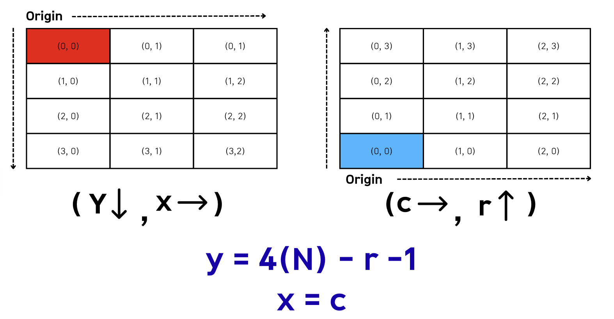
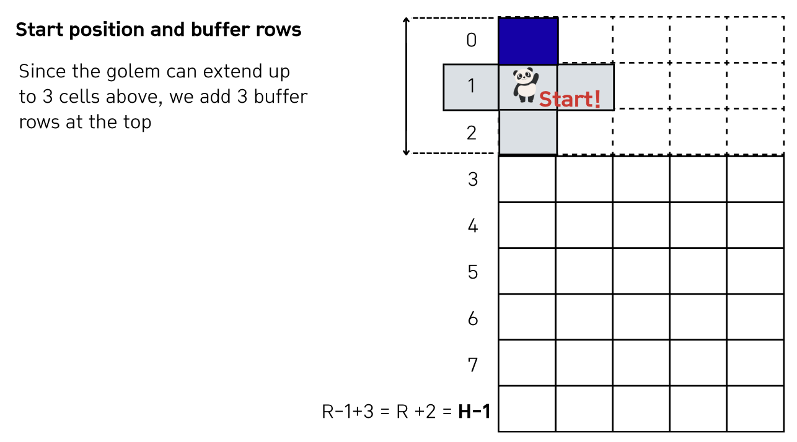
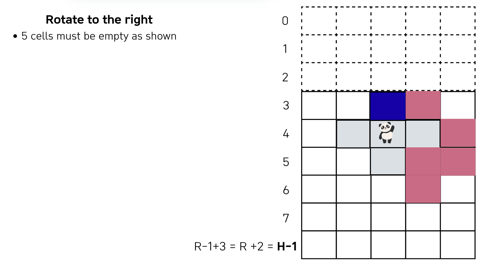
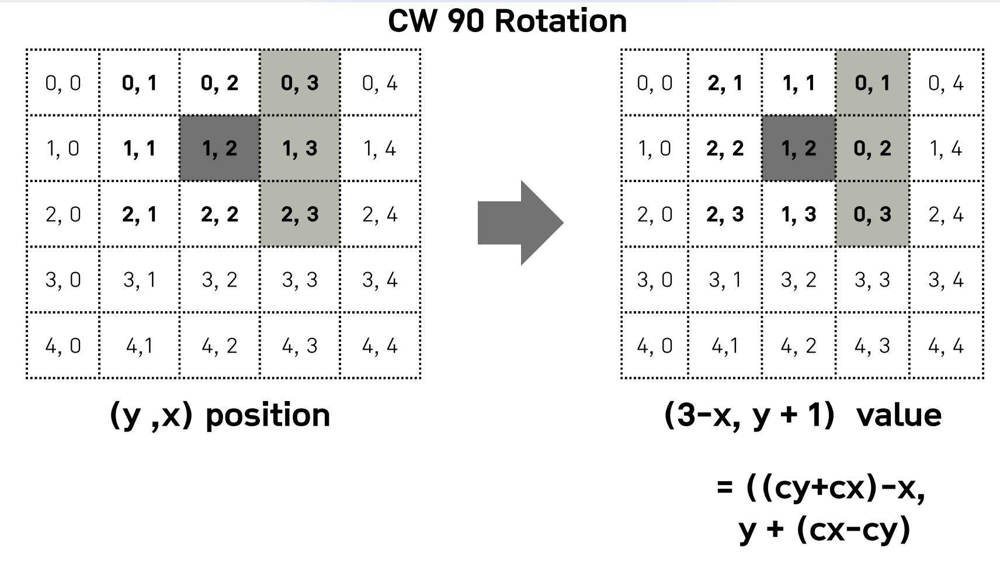

Lecture 2-2. DFS/BFS 실습#
예시 문제 링크
BFS 고득점 Kit
BFS
BFS 고득점 Kit#
타겟 넘버#
Explanation
n개의 음이 아닌 정수 순서를 바꾸지 않고 적절히 더하거나 빼서 타겟 넘버를 만들려고 한다.
parameters:
numbers: 사용할 수 있는 숫자가 담긴 배열 2 <= numbers.length <= 20
target: 타겟넘버 1<= target <= 1000
return:
타겟 넘버를 만드는 방법의 수를 반환
DFS를 사용하면 branch = 2, depth =N개라, 최악의 경우 2^20개
Solution
def solution(numbers, target):
def dfs(depth: int, total: int):
nonlocal answer
# termination
if depth == n:
if total == target:
answer += 1
return
# branch + / -
dfs(depth+1, total+numbers[depth])
dfs(depth+1, total - numbers[depth])
answer = 0
n = len(numbers)
dfs(0, 0)
return answer
# numbers = [1, 1, 1, 1, 1]; target=3 # 5
numbers = [4, 1, 2, 1]; target=4 # 2
print(solution(numbers, target))
네트워크#
Solution
union-find 구조를 이용해 풀이
def find(a):
global parent
if parent[a] == a:
return a
parent[a] = find(parent[a]) # path compression
return parent[a]
def union(a, b):
global rank
rootA = find(a); rootB = find(b)
if rootA == rootB:
return False
if rank[rootA] == rank[rootB]:
parent[rootB] = rootA
rank[rootA] += 1
elif rank[rootA] > rank[rootB]:
parent[rootB] = rootA
else:
parent[rootA] = rootB
return True
def solution(n, computers):
global parent, rank, GroupCnt
GroupCnt = n
parent = [idx for idx in range(n)]
rank = [0] * n # height
for node in range(n):
for end_node in range(node+1, n):
if computers[node][end_node] == 0:
continue
else: # 연결되어 있고
if union(node, end_node):
GroupCnt -= 1
return GroupCnt
게임 맵 최단 거리#
Solution
from collections import deque
def solution(maps):
N = len(maps); M = len(maps[0])
def in_range(y, x):
nonlocal N, M
return 0<=y<N and 0<=x<M
DY = [-1, 1, 0, 0]; DX = [0, 0, -1, 1]
visited = [[False]*M for _ in range(N)]
start_y = 0; start_x = 0
target_y = N-1; target_x = M-1
q = deque([(start_y, start_x, 1)]) # y, x, dis
# BFS
while q:
cur_y, cur_x, cur_dis = q.popleft()
# Early Stopping
if cur_y == target_y and cur_x == target_x:
return cur_dis
for t in range(4):
nxt_y = cur_y + DY[t]
nxt_x = cur_x + DX[t]
if in_range(nxt_y, nxt_x) and maps[nxt_y][nxt_x] == 1 and not visited[nxt_y][nxt_x]:
visited[nxt_y][nxt_x] = True
q.append((nxt_y, nxt_x, cur_dis + 1 ))
return -1 # 위에서 도달하지 못한 경우 -1를 return
# maps= [[1,0,1,1,1],[1,0,1,0,1],[1,0,1,1,1],[1,1,1,0,1],[0,0,0,0,1]] # 11
maps= [[1,0,1,1,1],[1,0,1,0,1],[1,0,1,1,1],[1,1,1,0,0],[0,0,0,0,1]] # -1
print(solution(maps))
단어 변환#
“변환 단계 최소 / 간선 개수 최소 / 최소 횟수” → 무조건 BFS 떠올리는 습관
Idea
parameters:
두 개의 단어 begin, target
두 단어는 같지 않다.
단어의 집합
words, 3 <= words.length <= 50, 각 단어 3 <= str.length <= 10
아래의 규칙을 이용하여 begin -> target 변환하는 가장 짧은 변환 과정을 찾으려고 한다.
한 번에 한 개의 알파벳만 바꿀 수 있음
words에 있는 단어로만 변환할 수 있음 (target도words안에 있어야 함.)
예를 들어, beging이 “hit”이고 target이 “cog”, words = [“hot”, “dot”, “dog”, “lot”, “log”, “cog”]라면 “hit” -> “hot” -> “dot” -> “dog” -> “cog”와 같이 4단계를 거쳐 변환할 수 있다.
return:
“최소” 몇 단계의 과정을 거쳐 begin을 target으로 변환할 수 있는 지 return 하도록 solution함수를 작성해주세요.
변환할 수 없을 때 0을 반환
Idea:
문제에서 “최솟값”을 계산하라고 했으니까, BFS로 접근해보면, 각 단어들을 node로 설정하고
하나의 char만 다른 값들만 edge 연결시킨다.
그리고 begin노드에서 target 노드까지 연결된 최소 거리를 측정하면 된다. (shortest path)
Solution
from heapq import heappush, heappop
MAX = int(1e10)
def is_one_different(word1: str, word2: str) -> bool:
cnt = 0
if len(word1) != len(word2):
return False
for idx in range(len(word1)):
if word1[idx] != word2[idx]:
cnt += 1
if cnt >= 2:
return False
return True
def dijkstra(start_node, target_node):
global shortest_path
shortest_path[start_node] = 0
pq = [(0, 0)]
# (E+V) log(V)
while pq:
cur_dis, cur_node = heappop(pq) # VlogV
if cur_dis > shortest_path[cur_node]:
continue
if cur_node == target_node:
return
# Elog(V)
for nxt_node in graph[cur_node]:
nxt_dis = cur_dis + 1
if nxt_dis < shortest_path[nxt_node]:
shortest_path[nxt_node] = nxt_dis
heappush(pq, (nxt_dis, nxt_node))
def solution(begin, target, words):
global graph, shortest_path
if target not in words:
return 0
n = len(words) + 1 # words에 있는 단어들 + begin 단어
graph = [[] for _ in range(n)]
# graph INIT ~ O(N^2)
for idx, word in enumerate(words):
if is_one_different(begin, word):
graph[0].append(idx+1) # words안에 있는 단어들은 index +1 (begin이 1증가)
graph[idx+1].append(0)
if word == target:
target_id = idx + 1
for j in range(idx+1, len(words)):
if is_one_different(word, words[j]):
graph[idx+1].append(j+1)
graph[j+1].append(idx+1)
# ~ O(ElogN)
shortest_path = [MAX] * n
dijkstra(0, target_id)
return shortest_path[target_id] if shortest_path[target_id] != MAX else 0
# begin = "hit"; target="cog"; words = ["hot", "dot", "dog", "lot", "log", "cog"] # 4
begin = "hit"; target="cog"; words = ["hot", "dot", "dog", "lot", "log"] # 0
print(solution(begin, target, words))
아이템 줍기#
Idea
이 문제는 그래프를 직접 adjacency list로 그리려고 하면 괴로워진다. 애초에 “정점-간선 그래프”가 아닌 격자 (grid) + BFS로 생각하는게 훨씬 편하다.

위의 상황에서 아래처럼 좌표를 2배로 만들면, 모서리와 안쪽 칸이 분리되어 테두리만 정확히 따라갈 수 있게 된다.

좌표를 2배로 키운다.
이유: 직사각형들이 꼭짓점만 닿을 때, 대각선으로 잘못 돌아가는 길을 막기 위해
좌표를 2배로 만들면 “모서리”들이 모두 칸 사이에 생겨서, 테두리만 정확히 따라갈 수 있음
직사각형들로 2D 맵을 만든다.
처음에는 직사각형 전체 영역을 1(지나갈 수 있음)으로 채운다.
그 다음, 직사각형 내부 (테두리 제외)는 0 (못지나감)으로 채운다.
이렇게 하면 딱 ‘테두리’만 1로 남음 -> 우리가 갈 수 있는 길은 이 1인 칸들
캐릭터 위치에서 아이템 위치까지 BFS
시작점, 도착점 좌표도 2배로
상/하/좌/우 네 방향으로만 이동
1인 칸만 이동 가능
BFS에서 (처음 아이템에 도달했을 때 거리 /2) 가 정답
왜 이렇게 하면 효율적인가?
좌표가 최대 50이라서, 2배를 해도 최대 100 × 100 정도 격자.
BFS 한 번 돌려도 O(100 * 100) 정도 → 충분히 빠름.
직사각형 개수도 많지 않아서, 전체 채우는 것도 O(rectangle 수 * 100 * 100) 이하.
그래프의 인접 리스트를 만들 필요 없이, 그냥 2D 배열 + BFS로 끝낼 수 있어서 코드도 훨씬 깔끔해.
Solution
한가지 짚을 점은, 아래 구현에서 range체크를 할 때, 0<=nx<=MAX로 2<=nx<=MAX를 사용하지 않았다. x와 y의 범위는 원래 1<= x, y<=50인데, 이처럼 하는 이유는, graph의 유효 인덱스 범위는 행/열 인덱스: 0~101이기 때문이다.
왜냐하면, grahp[0][..], graph[1][..]은 이미 0인 상태이며 뒤의 range는 넉넉히 해두고 실제 갈 수 있는 상태는 graph[0][..], graph[1][..]의 0/1 상태로 판단하기 때문이다.
from collections import deque
def solution(rectangle, characterX, characterY, itemX, itemY):
# N = 51
# 1. 좌표 2배 스케일링
MAX = 102
graph = [[0] * MAX for _ in range(MAX)]
# (x1, y2) ~ (x2, y2)
# (x1, y1) ~ (x2, y1)
#2-1. 직사각형 전체를 1로 채우기
for x1, y1, x2, y2 in rectangle:
x1 *= 2 ; y1 *= 2 ; x2 *= 2 ; y2 *= 2
# 직사각형 안에는 다 1로 채우기
for y in range(y1, y2+1):
for x in range(x1, x2+1):
graph[x][y] = 1
#2-2. 직사각형 내부는 0으로 지워서 테두리만 남기기
for x1, y1, x2, y2 in rectangle:
x1 *= 2 ; y1 *= 2 ; x2 *= 2 ; y2 *= 2
# 직사각형 안에는 다 1로 채우기
for y in range(y1+1, y2):
for x in range(x1+1, x2):
graph[x][y] = 0
# 3. BFS로 최단 거리 탐색
sx, sy = characterX*2 , characterY*2
ex, ey = itemX*2 , itemY*2
dist = [[-1]*MAX for _ in range(MAX)]
q = deque()
q.append((sx, sy))
dist[sx][sy] = 0
dx = [1, -1, 0, 0]
dy = [0, 0, 1, -1]
while q:
x, y = q.popleft()
# 아이템 위치 도달하면 (2배 스케일링 했으니) 거리 나누기 2
if x == ex and y == ey:
return dist[x][y] // 2
for k in range(4):
nx = x + dx[k]
ny = y + dy[k]
# 맵 범위 확인 + 테두리(1)만 이동 + 미방문
if 0 <= nx <= MAX and 0 <= ny <= MAX:
if graph[nx][ny] == 1 and dist[nx][ny] == -1:
dist[nx][ny] = dist[x][y] + 1
q.append((nx, ny))
# rectangle = [[1,1,7,4],[3,2,5,5],[4,3,6,9],[2,6,8,8]]; s_x = 1; s_y=3; item_x = 7; item_y=8 # 17
# rectangle = [[1,1,8,4],[2,2,4,9],[3,6,9,8],[6,3,7,7]]; s_x = 9; s_y=7; item_x = 6; item_y=1 # 11
# rectangle = [[1,1,5,7]]; s_x = 1; s_y=1; item_x = 4; item_y=7 # 9
# rectangle = [[2,1,7,5],[6,4,10,10]]; s_x = 3; s_y=1; item_x = 7; item_y=10 # 15
rectangle = [[2,2,5,5],[1,3,6,4],[3,1,4,6]]; s_x = 1; s_y=4; item_x = 6; item_y=3 # 10
print(solution(rectangle, s_x, s_y, item_x, item_y))
여행 경로#
Solution
graph alogirhtm의 오일러 경로를 공부하면 된다.
from collections import defaultdict
def solution(tickets):
'''
Eulerian Path
'''
stack = []
graph = defaultdict(list)
for u, v in tickets:
graph[u].append(v)
# Sort
for node in graph:
graph[node].sort(reverse=True)
stack = ["ICN"]
route = []
while stack:
last_node = stack[-1]
if graph[last_node]:
stack.append(graph[last_node].pop())
else:
route.append(stack.pop())
return route[::-1]
# tickets = [["ICN", "JFK"], ["HND", "IAD"], ["JFK", "HND"]] # ['ICN', 'JFK', 'HND', 'IAD']
# tickets = [["ICN", "SFO"], ["ICN", "ATL"], ["SFO", "ATL"], ["ATL", "ICN"], ["ATL","SFO"]] # ['ICN', 'ATL', 'ICN', 'SFO', 'ATL', 'SFO']
# tickets = [["ICN", "A"], ["ICN", "B"], ["C", "ICN"], ["B", "D"], ["D", "E"], ["E", "A"], ["A", "C"]] # ['ICN', 'A', 'C', 'ICN', 'B', 'D', 'E', 'A']
tickets = [["ICN", "A"], ["A", "B"], ["B", "ICN"]] # ['ICN', 'A', 'B', 'ICN']
print(solution(tickets))
퍼즐 조각 채우기#
Idea
CCW 로 90도 회전하는 경우, 좌표는 다음과 같이 변한다. (y, x) -> (N-1-x, y)
문제를 읽어보면 퍼즐 조각과 비어있는 부분은 같은 사이즈일 경우, 그 size에 해당하는 퍼즐 조각과 비어있는 부분의 “모양”이 같은 지 확인해야한다.
dict[int, list[tuple]]로 채워준다.
key: size
value: key에 해당하는 사이즈를 가진, locs: list[tuple]들의 모임
모양을 확인하기 위해, cell들의 상대적인 위치를 계산하도록 한다.
좌상단 (y, x)둘다 Min_heap을 기준점으로 하여 나머지 Locs들을 좌상단 (y,x)에 대해서 subtraction을 해주면, 상대적인 위치로 변한다. 이를 sort()하면, 두 리스트가 동일하다면, 모양이 같은 것으로 판명할 수 있다.
필요한 자료 구조
empty_spaces
puzzles_parts
is_empty_spaces_used
Explanation
테이블 위에는 “게임 보드”와 “테이블”이 있다.
게임보드와 테이블은 모두 각 칸이 1x1 크기인 정사각 격자 모양(NXN)이다.
0은 빈칸, 1은 이미 채워진 칸
게임 보드에 퍼즐 조각이 놓일 빈칸 및 table위의 퍼즐조각은 최소 1개에서 6개까지 연결된 형태
다음 규칙에 따라 “테이블” 위의 퍼즐 조각을 “게임 보드”의 빈칸에 채운다.
INIT:
처음 테이블과 게임보드는 인접한 칸이 닿지 않도록 퍼즐들이 차있다.
규칙
조각은 한 번에 하나씩 채워 넣는다.
한 조각이 해당 게임 보드에 들어갈 수 있는 여부 확인 후 다음 조각을 확인해야한다. for loop
문제는, ‘최대한 많은’ 조각을 채워넣어야한다.
똑같은 빈칸이라도, 1개를 넣느냐, 여러개를 넣을 수 있느냐에 따라 다른데, 이때 좋은 점은 인접한 칸이 비어있지 않아야 하므로, 한 번 넣을 때 빈 칸이 온전히 꽉차도록 배치해야한다는 것이다. (규칙 4번에 의해)
조각을 회전시킬 수 있다.
4개 가능: 그대로 + Rotate(90도, 180도, 270도)
조각을 뒤집을 수는 없다.
“게임 보드”에 “새로” 채워 넣은 퍼즐 조각과 인접한 칸이 비어있으면 안 된다.
Algorithm
game_board을 bfs: 비어있는 곳 확인 ~ O(N^2)
dict[int, [list[(y, x)]]: dict[size]에는 넓이가 size만한 비어있는 위치 정보들이 저장되어 있음.
table 을 bfs: 퍼즐 조각 모양 확인 ~ O(N^2)
dict[int, [list[(y, x)]]: dict[size]에는 넓이가 size만한 퍼즐 조각들의 정보들이 저장되어 있음.
사이즈가 작은 순서대로, puzzles_parts[size]를 탐색.
for size for 현재 사이즈 퍼즐 조각 idx_p for 현재 사이즈의 비어있는 공간 idx_e if is_empty_spaces_used == True: continue if (현재 사이즈 퍼즐 조각을 비어있는 공간에 넣을 수 있다): -> 현재 모양, 90, 180, 270에 대해서 돌렸을 때의 모양까지 확인 total += 1 break # 넣을 수 있으면 현재 퍼즐 조각에 대해서 여기서 끝내야함
return:
규칙에 맞게 최대한 많은 퍼즐 조각을 채워 넣을 경우, 총 몇 칸을 채울 수 있는지 return 하도록 solution 함수를 완성해라.
Solution
from collections import defaultdict , deque
from heapq import heappush, heappop
def in_range(y, x):
global N
return 0 <= y < N and 0 <= x < N
def BFS(s_y, s_x, visited, flag, graph):
global puzzles_parts, empty_spaces, is_empty_spaces_used
'''
floodfill을 하면서, 조건에 맞는 곳을 Visited에 삽입시킨다.
'''
DY= [-1, 1, 0, 0]; DX = [0, 0, 1, -1]
visited.add((s_y, s_x))
q = deque([(s_y, s_x)])
locs = []
size = 0
while q:
cur_y, cur_x = q.popleft()
# start 위치인 (s_y, s_x)에 대해 "상대적인 위치" 저장
locs.append((cur_y - s_y, cur_x - s_x))
size += 1
for t in range(4):
ny = cur_y + DY[t] ; nx = cur_x + DX[t]
if (ny, nx) in visited:
continue
if in_range(ny, nx) and graph[ny][nx] == flag:
visited.add((ny, nx))
q.append((ny, nx))
locs.sort(key=lambda x: (x[0], x[1])) # 정렬 y-min, x-min 정렬
if flag == 1: # 채워져있는 칸을 찾는 puzzle parts를 찾는다면,
puzzles_parts[size].append(locs[:]) # slicing
else: # 비어있는 칸을 찾는 다면,
empty_spaces[size].append(locs[:])
is_empty_spaces_used[size].append(False)
def make_locs_relative_locs(locs):
'''
이미 정렬된 Locs를 받음
in-place로 상대적 위치로 변환
'''
ref_y, ref_x = locs[0]
for idx in range(len(locs)):
locs[idx] = (locs[idx][0] - ref_y, locs[idx][1] - ref_x)
def can_fit(puzzle_parts_locs, empty_locs):
'''
두 Parameters들은 각 조각/비어있는 곳에 대한
(0, 0)에 대한 상대적 위치로 저장되어 있음.
'''
global N
assert len(puzzle_parts_locs) == len(empty_locs)
before_locs = puzzle_parts_locs[:]
for _ in range(4): # puzzle_parts 4번의 rotation
# 모든 puzzle_parts의 현재 locs에 대하여 s
after_locs = []
for loc in before_locs: # before_locs의 원소양이 바뀌면 안되므로, temp_locs에 대신 채워넣음.
y = loc[0]; x = loc[1]
after_locs.append((N-1-x, y))
before_locs = after_locs[:] # Update 다음 90도 CCW를 위해
# 회전된 좌표들에 대해 좌표들의 '상대적 위치'가 동일한지 확인
# empty_locs는 한 번 만들면 변하지 않고, 이미 상대적 위치들이 정렬되어 있음.
after_locs.sort(key=lambda x: (x[0], x[1]))
make_locs_relative_locs(after_locs)
if empty_locs == after_locs:
return True
return False
def solution(game_board, table):
global empty_spaces, puzzles_parts, is_empty_spaces_used, N
empty_spaces = defaultdict(list)
puzzles_parts = defaultdict(list)
is_empty_spaces_used = defaultdict(list) # False/True
N = len(table)
# Step 1. BFS로 empty_spaces와 puzzles_parts를 size별로 위치 정보 계산
empty_spaces_visited = set()
puzzles_parts_visited = set()
for y in range(N):
for x in range(N):
if not (y, x) in empty_spaces_visited and \
game_board[y][x] == 0: # 비어져있는 칸이 비어있는 곳
BFS(y, x, empty_spaces_visited, 0, game_board)
if not (y, x) in puzzles_parts_visited and \
table[y][x] == 1: # 채워져있는 칸이 puzzle parts
BFS(y, x, puzzles_parts_visited, 1, table)
# Step 2. 사이즈 별로, puzzles_parts[size]를 탐색
total = 0
for size in puzzles_parts.keys():
for puzzle_locs in puzzles_parts[size]: # 모든 퍼즐에 대하여
if size in empty_spaces:
for idx_e, empty_locs in enumerate(empty_spaces[size]):
if is_empty_spaces_used[size][idx_e] == True:
continue
if can_fit(puzzle_locs, empty_locs):
total += size # "총 몇 칸을 채울 수 있는지"
is_empty_spaces_used[size][idx_e]= True
break # 찾았으면 맞는 빈 공간 찾는 것을 중단하고, 다음 puzzle 조각으로 넘어가야함.
return total
BFS#
AI 로봇 청소기#
실수한 부분
이런 BFS문제를 풀 때, 각 격자가 가질 수 있는 상태의 수가 매우 중요함. 변화하는 상태에 대해서 update할 때 확인해야 할 것이 무엇인지 알 수 있기 때문
각 격자는 (1) 먼지가 있거나: 먼지의 양(p) 1 <= graph[y][x] <= 100 로 존재. (2) 아무런 먼지가 없거나: graph[y][x] == 0 (3) 물건이 위치할 수 있음: graph[y][x] == -1 (4) 청소기 위치: vaccume_list[id].y, vaccume_list[id].x, locs_vaccume_set: set(tuple) -> 청소기의 위치를 나타내는 2차원 배열을 따로 만들어서 관리 B[r][c] = robot.num
이번 문제에서, 가장 큰 오류는 clean() 함수에서 존재하였다.
청소할 ‘방향’을 결정할 때, 현재 그래프의 먼지량 총합의 기준이 아니라, “청소할 수 있는”먼지 총합을 기준으로 방향을 설정했어야했다.
즉, 한 격자당 20 먼지량을 청소할 수 있으므로 총 합을 구할 때 min(20, A[r][c])로 구해야하는데, 그냥 A[r][c]을 계산해서 틀렸음.
또한 시간을 가장 많이 잡아먹는 부분이 move()의 BFS 함수에서 존재하였다.
현재 로봇 청소기 위치에 먼지가 있으면 움직이지 않아도 된다. 라는 부분이 잘 명시되어 있지 않아서 헷갈렸다.
가장 가까운 오염거리에 대한 위치 계산을 할 때, 모든 오염 셀에 대한 거리를 계산하는 게 아니라, 로봇 위치에서 가장 가까운 격자의 거리를 계산하면 그 다음은 break를 하는 것이 훨씬 빠른데, 전자의 방법을 사용하여 시간 초과 에러를 받았다.
마지막으로, constraints에 대한 time complexity계산을 어느 정도 한 뒤에 알고리즘을 짜야하는데, 너무 급하게 구현을 한 것 같다.
Solution
from collections import deque
import sys
# sys.stdin = open("Input.txt")
class Robot:
def __init__(self, num:int, r:int, c: int):
self.num = num
self.r = r
self.c = c
N, K, L = map(int, input().split())
A = [list(map(int, input().split())) for _ in range(N)]
B = [[-1]*N for _ in range(N)]
robots = []
for i in range(K):
r, c = map(int, input().split())
rb = Robot(i, r-1, c-1)
robots.append(rb)
B[rb.r][rb.c] = rb.num
# 4방(좌,상,우,하) + (0,0) 유지(청소 시 자기 칸 포함용)
dxys = [(0, -1), (-1, 0), (0, 1), (1,0), (0, 0)]
def in_range(x: int, y: int) -> bool:
return 0 <= x < N and 0 <= y < N
def move(rb: Robot) -> None:
if A[rb.r][rb.c] > 0:
return
nearest = None
best_D = -1
q = deque()
dist = [[-1] * N for _ in range(N)]
q.append((rb.r, rb.c))
dist[rb.r][rb.c] = 0
while q:
r, c = q.popleft()
if best_D !=-1 and best_D < dist[r][c]:
break
for dx, dy in dxys[:-1]:
nr = r + dx
nc = c + dy
if in_range(nr, nc) and dist[nr][nc] == -1 and \
A[nr][nc] >= 0 and B[nr][nc] == -1:
dist[nr][nc] = dist[r][c] + 1
q.append((nr, nc))
if A[nr][nc] > 0 and (best_D == -1 or best_D == dist[nr][nc]):
best_D = dist[nr][nc]
nearest = (nr, nc) if nearest is None else min((nr, nc), nearest)
if nearest is not None:
B[rb.r][rb.c] = -1
rb.r, rb.c = nearest
B[rb.r][rb.c] = rb.num
# def clean(rb:Robot) -> None :
# max_sum = 0
# best_no_dxy = None
# # 하나의 로봇당 4방향에 대해
# for no_dxy in dxys[:-1]: # 4방 중 제외할 방향 하나를 고른다
# s = 0
# for dx, dy in dxys: # 자기 칸(0,0) + 4방
# r, c = rb.r + dx, rb.c + dy
# if in_range(r, c) and (dx, dy) != no_dxy:
# s += min(20, max(0, A[r][c])) # A[r][c]가 -1인 경우 대비하여 max(0, A[r][c])
# if max_sum < s:
# max_sum = s
# best_no_dxy = no_dxy
# if max_sum > 0:
# for dx, dy in dxys:
# r, c = rb.r + dx, rb.c + dy
# if in_range(r, c) and (dx, dy) != best_no_dxy and A[r][c] > 0:
# A[r][c] = max(0, A[r][c] - 20)
def clean(rb:Robot) -> None:
removed_dir = {
0: (0, -1),
1: (-1, 0),
2: (0, 1),
3: (1, 0)
}
cells_dict = {
0: [(-1, 0), (0, 0), (1, 0), (0, 1)],
1: [(0, -1), (0, 0), (0, 1), (1, 0)],
2: [(-1, 0), (0, -1), (0, 0), (1,0)],
3: [(-1, 0), (0, -1), (0, 0), (0, 1)]
}
DR = [-1, 1, 0, 0]
DC = [0, 0, -1, 1]
# 5가지 방향에 대한 총합
five_sums = A[rb.r][rb.c]
for t in range(4):
ar = rb.r + DR[t]
ac = rb.c + DC[t]
if in_range(ar, ac) and A[ar][ac] >= 0:# NOTE: -1이면 five_sum이 잘못 구해짐
five_sums += A[ar][ac]
max_sum = 0
max_dir = None
for key, dir in removed_dir.items():
cur_sum = five_sums
rr = rb.r + dir[0]
rc = rb.c + dir[1]
if in_range(rr, rc) and A[rr][rc] >= 0: # NOTE: -1이면 cur_sum이 잘못 빼짐
cur_sum -= min(A[rr][rc], 20)
if cur_sum > max_sum:
max_sum = cur_sum
max_dir = key
if max_sum > 0:
for dir in cells_dict[max_dir]:
nr = rb.r + dir[0]
nc = rb.c + dir[1]
if in_range(nr, nc) and A[nr][nc] > 0:
A[nr][nc] -= min(20, A[nr][nc])
def increase() -> None:
"""먼지 축적: 모든 먼지 칸(+5). 물건(-1)이나 0칸은 변화 없음."""
for i in range(N):
for j in range(N):
if A[i][j] > 0:
A[i][j] += 5
def spread() -> None:
"""
먼지 확산:
- 깨끗한 칸(=0)으로만 확산됨.
- 각 깨끗한 칸은 인접 4방의 '먼지 양 합' // 10 만큼 증가.
- 동시 적용을 위해 temp 누적 후 일괄 반영.
"""
temp = [[0] * N for _ in range(N)]
for i in range(N):
for j in range(N):
if A[i][j] == 0:
s = 0
for dx, dy in dxys[:-1]:
r, c = i + dx, j + dy
if in_range(r, c) and A[r][c] > 0:
s += A[r][c]
temp[i][j] = s // 10
for i in range(N):
for j in range(N):
A[i][j] += temp[i][j]
def total_dust() -> int:
"""현재 격자 내 총 먼지량 합산(>0인 칸만)."""
s = 0
for row in A:
for v in row:
if v > 0:
s += v
return s
# L 라운드 시뮬레이션
for _ in range(L):
# 1) 이동: 로봇 번호 순서대로
for rb in robots:
move(rb)
# 2) 청소: 로봇 번호 순서대로
for rb in robots:
clean(rb)
# 3) 먼지 축적
increase()
# 4) 먼지 확산
spread()
# 5) 총 먼지 출력 + 조기 종료
s = total_dust()
print(s)
if s == 0:
break
미생물 연구#
Explanation
미생물 연구
필요한 자료구조
graph: 현재 미생물의 위치를 저장한다. graph[y][x] = microbe_id , 아무것도 없으면 0으로 저장 (INIT)does_id_exist: [bool]= does_id_exit[id] = True/False로 저장 해당 미생물 id가 죽었는지 살았는지 체크id_to_locs: dict[int, list]= 미생물들은 삽입되거나 제거되므로 add()뒤에 move()를 시작할 때 항상 계속 갱신id_to_new_graph_origin: dict[int, Tuple[int]]: move()이후에 id마다의 locs 재계산은 time consuming하므로 move()할때 새로 옮긴 origin을 저장해두어, record()때 이웃 미생물 검사시에 사용한다.배양 크기 NxN (0, 0) ~ (N, N), 0-indexed , N+1개
0 <= x,y < N (inclusive, exclusive)
좌하단이 (0, 0)이며 (x, y)로 표시
총 Q번의 실험 진행하며 각 실험의 결과를 기록
미생물 투입 (add) ~ O(N) + O(N)
(r1, c1, r2, c2)의 직사각형 여역에 한 무리의 미생물 투입
graph[y][x] = microbe_id 저장한다.
does_id_exist = [True] # id는 1부터 시작하므로, 맨 앞은 [True]로 저장
does_id_exist.append(True)
원래 자리에 다른 미생물이 존재하면 새로 투입된 미생물의 영역 내의 미생물들을 잡아먹는다.
원래 뭐가 있어도 현재 microbe_id로 저장한다.
이때 기존에 있는 미생물 id를
removed_id = set()에 저장해둔다.
즉, 영역 내에는 새로 투입된 미생물만 남게된다.
만약 기존에 있던 어떤 미생물 무리 A가 새로 투입된 미생물 무리 B에게 잡아먹혀서 영역이 2이상으로 나눠진 경우에는, 기존 미생물은 전부 사라진다.
map을 돌면서 해당 미생물 id의 그룹 수가 2이상이면 모두 제거 가능
does_id_exist[id]: list[int]= True/False에서 False 로 저장한다.
X: (아래에서 다시 셀 것임) 만약 그룹 수가 2이상이 아니라면, 기존에 있던
id_to_locs: list[set]의 set에서 id_to_locs[id].remove(locs)로 해당 위치를 지워준다.
–> 위의 문제는 뭐냐면, 기존에 있던 배양용기에서 뭔가가 사라지면, pq안에서 순서가 제대로 된 것이 없어지게 된다. –> 이 때 또 graph를 돌면서 해당 id에 대해 계산해야하기때문에, step 2 (move)에서 한번에 계산하는게 더 편리할 것
배양 용기 이동 (move)
모든 미생물을 새로운 배양 용기로 이동시킴. (NxN)
new_graph를 생성한다. (임시)
기존 배양 용기에 있는 무리 중 가장 차지한 영역이 넓은 무리를 하나 선택 -> 동일한 영역이면, 가장 먼저 투입된 미생물을 선택한다.
Priority queue / sort
기존 graph를 돌면서, (len(locs), id)정보를 저장하고, 이를 pq에 다 넣는다.
새롭게 INIT된 빈 id_to_locs: dict(int, list)
이 과정에서
id_to_locs[id].append()하여 locs 위치 정보를 파악해놓는다.위에서 pq에 바로 넣는 식으로하면, 예전에 pq에 미리 넣어놨던 것에서 미생물의 영역이 작아지는 경우에는 tracking하기가 어려우므로 다시 센다.
list.sort()로 한다.
선택된 미생물 무리를 새 배양 용기에 옮긴다. (new_graph)
이때 무리는 기존 용기에서의 “형태를 유지”해야한다.
해당 무리의 cell 좌표를 모두 가지고 있다가, origin이 바뀌면 그만큼 “평행이동”해준다.
배양 용기의 범위를 벗어나지 않아야 한다.
in_range() 함수
다른 미생물의 영역과 겹치지 않도록 두어야한다.
check(): 해당 id_to_locs[id]에 있는 모든 위치에서 new_graph의 모든 지점이 0이여야함.
위의 조건 안에서 x좌표가 최대한 작은 위치로 미생물을 옮겨야 하며, 그런 위치가 둘 이상이라면 최대한 y좌표가 작은 위치로 오도록 미생물을 옮긴다.
(최대한 ‘좌측하단의 좌표’가 배양 용기의 좌측하단에 오도록 위치)
미생물 id안에서 좌측하단의 좌표를 항상 알고 있는 것이 좋음
같은 x에서는 작은 y : for x (for y)
새로 옮겨진 위치는 (기존 위치 - 좌측하단 위치)
위의 조건을 만족하지 못하여 어떤 곳에도 둘 수 없으면, 새 용기에 옮기지 않고 사라진다.
does_id_exist[id] = False 로 저장
graph = new_graph[:] # 슬라이싱
실험 결과 기록 (record)
미생물 무리 중 상하좌우로 맞닿은 면이 있는 무리끼리는 ‘인접한 무리’
인접한 무리 쌍을 저장한다. (1, 2), (2, 3)
새로 옮겨진 위치에서 인접한지 확인한다. total = 0 pair_set = set() for id in id_to_locs: if does_id_exist[id]: id_to_locs[모든 위치] - lower_bottom_loc[id]의 4방향에 다른 id가 있으면, 인접 graph[dx][dy] != 0 and graph[dx][dy] != id: 인접 if (id1, id2) in pair_set or (id2, id1) in pair_set: continue total += len(id_to_locs[id1]) * len(id_to_locs[id2]) pair_set.add((id1, id2))
모든 ‘인접한 무리’ “쌍” 을 확인한다.
(A,B)와 (B,A)는 같은 쌍임
미생물 A의 영역의 넓이 x 미생물 B의 영역의 넓이만큼의 성과를 얻고 -> 이를 다 “더한” 값 (누적합)을 기록해야한다.
constraints:
2 <= N <= 15
1 <= Q <= 50
Solution
import sys
from collections import deque, defaultdict
from heapq import heappush, heappop
# sys.stdin = open("Input.txt")
input = sys.stdin.readline
def in_range(x, y):
global N
return 0 <= x < N and 0 <= y < N
def BFS(start_x, start_y, cur_id, visited):
global DX, DY
visited.add((start_x, start_y))
q = deque([(start_x, start_y)])
while q:
cur_x, cur_y = q.popleft()
for t in range(4):
nxt_x = cur_x + DX[t]
nxt_y = cur_y + DY[t]
if in_range(nxt_x, nxt_y) and not (nxt_x, nxt_y) in visited:
if graph[nxt_x][nxt_y] == cur_id:
q.append((nxt_x, nxt_y))
visited.add((nxt_x, nxt_y))
def count_group_bfs(cur_id):
global graph
cnt = 0
visited = set()
for y in range(N):
for x in range(N):
if graph[x][y] == cur_id and not (x, y) in visited:
BFS(x, y, cur_id, visited)
cnt +=1
return cnt
def add(r1, c1, r2, c2, id):
global graph, does_id_exist
removed_set = set()
# Step1: 새롭게 투입된 미생물 graph에 삽입
for x in range(r1, r2): # upper right : exclusive
for y in range(c1, c2):
if graph[x][y] != 0:
removed_set.add(graph[x][y])
graph[x][y] = id
does_id_exist.append(True) # 새로운 id있으면 삽입
# lower_bottom_coord[id] = (r1, c1)
# Step 2: 앞선 지워진 기존 미생물의 그룹 수가 2개 이상인지 확인
for is_removed_id in removed_set:
cnt = count_group_bfs(is_removed_id)
# NOTE: 그룹 수가 아예없을 때도 False로 바꾸어주어야한다.
if cnt >= 2 or cnt == 0:
does_id_exist[is_removed_id] = False
# 기존에 있던 location의 정보 다 삭제
def move():
global N, id_to_locs, DX, DY, graph, does_id_exist, id_to_new_graph_origin
new_graph = [[0] * (N) for _ in range(N)]
sort_pq = []
id_to_locs = defaultdict(list) # NOTE: 이전과 헷갈리지 않게 reinit
# Stpe1. 각 id에 대해서 Locs에 대해 조사
visited = set()
for y in range(N):
for x in range(N):
# 현재 아이디 = graph[x][y]에 대해서 방문하지 않았던 것이면
# 또한, add()함수에서 지워진, 미생물에 대해서 다시 0으로 만들지 않았으므로
# does_id_exist[id]에 대해서도 현재 살아있는 것인지 lazy validtaion을 진행한다.
cur_id = graph[x][y]
if cur_id != 0 and (x, y) not in visited and does_id_exist[cur_id]:
# cur_id = graph[x][y]
cnt = 0
q = deque([(x, y)])
visited.add((x, y))
while q:
cur_x, cur_y = q.popleft()
# 새로운 것을 만날 때마다
cnt += 1
# 예전 미생물이 다른 미생물한테 어느 정도 먹혀서 제일 작은 coordinate이 다를 수도 있음.
heappush(id_to_locs[cur_id], (cur_x, cur_y)) # min_heap, x와 y모두
# id_to_locs[id].append((cur_x, cur_y))
for t in range(4):
nxt_x = cur_x + DX[t]
nxt_y = cur_y + DY[t]
if not in_range(nxt_x, nxt_y):
continue
if (nxt_x, nxt_y) not in visited and graph[nxt_x][nxt_y] == cur_id:
visited.add((nxt_x, nxt_y))
q.append((nxt_x, nxt_y))
# 다 돌았으면
heappush(sort_pq, (cnt*-1, cur_id)) # cnt에 대해서는 max heap, cur_id에 대해서 min_heap
# Step2. 미생물을 새로운 배양 용기에 옮김
while sort_pq:
cur_area, cur_id = heappop(sort_pq)
cur_area *= -1
locs = id_to_locs[cur_id]
ref_coord = locs[0]
'''
NOTE: flag, found를 사용할 때, for loop이나 while loop이 여러개 중첩되어 있는 경우,
반드시 "모든 경우의 수"에 대해서 for/while loop이 끝났을 경우, 결과가 어떻게 되는지 확인하여 flag 처리를 각별히 주의해준다.
'''
flag = 0
# x좌표가 제일 작고, 같은 x위치가 2개이면, y의 위치가 작아야한다.
for origin_x in range(N):
for origin_y in range(N):
if new_graph[origin_x][origin_y] != 0:
continue
# 현재 cur_id에 대해 모든 locs에서 미생물을 옮길 수 있는지 확인
dif_x = ref_coord[0] - origin_x
dif_y = ref_coord[1] - origin_y
found = 1
for cur_loc in locs:
new_x = cur_loc[0] - dif_x
new_y = cur_loc[1] - dif_y
# 조건1. 배양 용기의 범위를 벗어나지 않아야 함.
if not in_range(new_x, new_y):
found = 0
break
# 조건 2. 다른 미생물의 영역과 겹치지 않도록 두기
if new_graph[new_x][new_y] != 0:
found = 0
break
# 만약 위의 모든 locs에 대해서 만족하였더라면, 옮길 수 있음
if found:
id_to_new_graph_origin[cur_id] = (origin_x, origin_y)
for cur_loc in locs:
new_x = cur_loc[0] - dif_x
new_y = cur_loc[1] - dif_y
new_graph[new_x][new_y] = cur_id
flag = 1 # default로 0으로 해놓고 찾았을 때만 1로 해야함. 만약 default로 1 해놓으면, 아무것도 못찾고 그냥 끝나버림
break # for문 break
# else:
# # 조건을 만족하지 못한 미생물은 사라져야함.
# does_id_exist[cur_id] = False
if flag:
break
if flag == 0:
does_id_exist[cur_id] = False
# Step 3:
graph = new_graph[:]
def record():
global id_to_locs, does_id_exist, id_to_new_graph_origin, DY, DX
total = 0
for id in range(1, len(does_id_exist)):
# 모든 id 에 대하여 인접한 곳에 다른 id 가 있으면,
if does_id_exist[id]:
locs = id_to_locs[id] # move하기 전의 locations
ref_coord = locs[0]
dif_x = ref_coord[0] - id_to_new_graph_origin[id][0]
dif_y = ref_coord[1] - id_to_new_graph_origin[id][1]
pair_set = set()
# 하나의 id에 다른 id가 존재하는 경우
for loc_x, loc_y in locs:
new_x = loc_x - dif_x
new_y = loc_y - dif_y
for t in range(4):
nxt_x = new_x + DX[t]
nxt_y = new_y + DY[t]
if in_range(nxt_x, nxt_y) and graph[nxt_x][nxt_y] != 0:
nxt_id = graph[nxt_x][nxt_y]
if (graph[nxt_x][nxt_y] != id) and (not nxt_id in pair_set):
if does_id_exist[nxt_id]:
pair_set.add(nxt_id)
total += len(id_to_locs[id]) * len(id_to_locs[nxt_id])
print(int(total / 2)) # (A, B) 와 (B, A)는 동일하므로 /2 로 나눠줌.
N, Q = map(int, input().rstrip().split())
'''
필요한 자료구조
'''
graph = [[0]*(N) for _ in range(N)]
does_id_exist = [True]
id_to_locs = defaultdict(list) # id_to_locs[id] = [항상 맨 앞에 lower-left loc]
DY = [-1, 1, 0, 0]; DX = [0, 0, -1, 1]
id_to_new_graph_origin = dict()
for id in range(1, Q+1): # microbe_id는 1부터 시작, graph가 0이면 아무것도 없음.
# if id == 4:
# print('a')
r1, c1, r2, c2 = map(int, input().rstrip().split())
add(r1, c1, r2, c2, id)
move()
record()
test case
8 4
2 2 5 6
2 3 5 8
2 0 5 3
1 1 6 6
3 3
0 0 3 2
1 0 3 3
2 2 3 3
8 5
0 0 2 5
1 1 5 6
1 0 3 6
7 7 8 8
2 4 6 7
6 6
3 4 5 5
3 3 4 4
2 0 3 1
0 2 1 4
1 4 3 6
5 0 6 2
민트초코 우유#
Solution
import sys
from collections import deque
import heapq
try:
sys.stdin = open("input.txt")
except:
pass
#
#
def print_trust():
for r in range(N):
for c in range(N):
print(board[r][c].trust, end=' ')
print()
print('=' * 20)
def print_food():
for r in range(N):
for c in range(N):
print(board[r][c].food, end=' ')
print()
print('=' * 20)
#
#
class Student:
def __init__(self, r, c):
self.r = r
self.c = c
self.food = 0
self.trust = 0 # 신앙심
self.defence = 0 # 방어
#
def __lt__(self, other):
return (-self.trust, self.r, self.c) < (-other.trust, other.r, other.c)
#
#
class Group:
def __init__(self, food):
# 대표 좌표, 대표 음식
self.food = food
self.member = []
self.manager = None
#
def set_manager(self):
"""
대표자 정하기 & trust set
대표자: trust up -> r down -> c down
대표자.trust += 그룹원 -1
팀원.trust -= 1
"""
self.manager = min(self.member)
for m in self.member:
if m == self.manager:
m.trust += len(self.member) - 1
else:
m.trust -= 1
#
def print_group_member(self):
for m in self.member:
print((m.r, m.c), end=' ')
print()
#
#
food2bin = {
'T': 0,
'C': 1,
'M': 2
}
#
#
def in_range(r, c):
return 0 <= r < N and 0 <= c < N
#
#
def breakfast():
"""
- 모든 학생의 trust += 1
"""
for r in range(N):
for c in range(N):
stu = board[r][c]
stu.trust += 1
#
#
dr = [-1, 1, 0, 0]
dc = [0, 0, -1, 1]
def bfs(sr, sc, food, group, v):
q = deque([(sr, sc)])
group.member.append(board[sr][sc])
while q:
r, c = q.popleft()
v[r][c] = True
for i in range(4):
nr = r + dr[i]
nc = c + dc[i]
if not in_range(nr, nc) or v[nr][nc] or board[nr][nc].food != food:
continue
q.append((nr, nc))
v[nr][nc] = True
group.member.append(board[nr][nc])
return v
#
#
def lunch():
"""
- 인접한 학생들과 신봉 음식이 같은 경우 그룹 형성
- 대표자: trust up -> r down -> c down
- 대표자.trust += 그룹원 -1
- 팀원.trust -= 1
:return:
"""
visited = [[False] * N for _ in range(N)]
group_lst = []
for r in range(N):
for c in range(N):
if visited[r][c]:
continue
# 그룹 형성
group = Group(board[r][c].food)
visited = bfs(r, c, board[r][c].food, group, visited)
group_lst.append(group)
# 대표자 정하기 & trust set
group.set_manager()
return group_lst
#
#
def set_order(group_lst):
"""
[1] 전파 순서 정하기
- 전파 순서: 단일 -> 이중 -> 삼중 그룹
- 대표자의 B up -> 대표자의 r down -> c down
:return order_lst
"""
order_lst = [[] for _ in range(3)] # 단일/이중/삼중
for g in group_lst:
# 삼중인 경우
if g.food == 7:
order_lst[2].append(g.manager)
# 단일 인 경우
elif g.food in [1, 2, 4]:
order_lst[0].append(g.manager)
else: # 이중인 경우
order_lst[1].append(g.manager)
return order_lst
#
#
def strong_spread(x, spreader, target):
target.food = spreader.food
x -= (target.trust + 1)
target.trust += 1
return x
def weak_spread(x, spreader, target):
for food in [0, 1, 2]:
if ((spreader.food >> food) & 1 == 1) and ((target.food >> food) & 1 == 0):
target.food |= (1 << food)
target.trust += x
x = 0
return x
def do_spread(spreader):
"""
[2] 전파하기
- 전파자
- 전파 방향: trust % 4
- x: B-1(간절함), B = 1check
- 전파 시작
- 전파 방향으로 1칸씩 이동하며 전파
- 격자 밖으로 나가거나 x = 0이 되면 전파 종료
- 전파 음식이 타겟음식과 같으면 전파 X, 다음 진행
- 다르면, 전파 수행
[3] 전파 방법
- y: 타겟의 trust
- 강한 전파(x > y):
- 타겟.food = 전파.food
- 전파.x -= y+1
- 타겟.trust += 1
- 약한 전파 (x <= y):
- 타겟.food |= 전파자.food (있는지 확인 필요)
- 타겟.trust += x
- 전파.x = 0
:return:
"""
d = spreader.trust % 4
x = spreader.trust - 1
spreader.trust = 1
r, c = spreader.r, spreader.c
for i in range(1, N):
nr = r + dr[d] * i
nc = c + dc[d] * i
if not in_range(nr, nc) or x <= 0:
break
target = board[nr][nc]
if target.food ^ spreader.food: # 두 음식이 다를 때만 전파 진행
if x > target.trust:
x = strong_spread(x, spreader, target)
else:
x = weak_spread(x, spreader, target)
target.defence = t
#
#
def dinner(group_lst):
# 전파 순서 정하기
order_lst = set_order(group_lst)
for order in order_lst:
order.sort()
for spreader in order:
if spreader.defence < t:
do_spread(spreader)
#
#
def print_result():
"""
TCM, TC, TM, CM, M, C, T 순으로 각 음식의 신봉자들의 신앙심 총합 출력
'T': 0,
'C': 1,
'M': 2
"""
result = [0]*8
for r in range(N):
for c in range(N):
stu = board[r][c]
result[stu.food] += stu.trust
for food in ['TCM', 'TC', 'TM', 'CM', 'M', 'C', 'T']:
key_food = 0
for f in food:
key_food |= 1 << food2bin[f]
print(result[key_food], end=" ")
print()
#
#
N, T = map(int, input().split())
board = [[0] * N for _ in range(N)]
for row in range(N):
tmp = input()
for column in range(N):
stu = Student(row, column)
food = food2bin[tmp[column]]
stu.food |= (1 << food)
board[row][column] = stu
#
for row in range(N):
tmp = list(map(int, input().split()))
for column in range(N):
board[row][column].trust = tmp[column]
#
#
for t in range(1, T + 1):
breakfast()
GROUP_LST = lunch()
dinner(GROUP_LST)
print_result()
list.sort() vs. heapq
어디서 틀렸나? 사실 잘 모르겠음.
중요한 건, 보통의 경우는 list.sort()를 사용하고 아래와 같은 경우에만 min-heap을 쓴다. 왜냐면 min-heap의 pop()이후 다시 heapify하는데 시간이 걸리기 때문.
간선이 스트리밍으로 들어오거나 한 번에 다 만들기 어려운 상황(외부 입력/온라인 처리)
“가장 싼 간선부터 일부만” 처리하며 중간에 조기 종료가 확실한 특수 케이스
메두사와 전사들#
Bottleneck constraints 관리
이 문제에서는 전사의 명수가 메모리/시간 차원에서 가장 큰 bottleneck이 된다. 따라서, 이러한 전사들의 위치와 생사문제를 관리하는 것이 중요해진다. 따라서, 해당 warriors들은 class Warrior로 전사마다 하나씩 만드는 행위는 매우 위험하다. 클래스 자체는 메모리를 많이 차지하기 때문에, 이것보다는 list[idx]차원으로 관리해주는 것이 더 유리하다.
war_ys: list[int] # war_ys[war_id] = y war_xs: list[int] # war_xs[war_id] = x alive: list[bool] # alive[war_id] = True warriors_graph: dict[tuple(int, int), list[int]] defaultdict(list) # warriors_graph[(y, x)] = [war_id1, war_id2, …]
메두사의 시야각
특정 전사에 의해 메두사에게 가려지는 범위는 메두사와 해당 전사의 상대적인 위치에 의해 결정된다. 상하좌우 대각선 8방향을 나누었을 때, 메두사로부터 8방향 중 한 방향에 전사가 위치해있다면, 그 전사가 “동일한 방향으로 바라본 범위”에 포함된 모든 칸은 메두사에게 보이지 않습니다.

또한, 메두사의 전체 시야각을 계산할 때, 아래와 같은 상황이 있으므로, 순차적으로 메두사의 전체 시야각을 1로 지정한뒤, 전사들의 시야각을 바라보는 “방향”에 맞춰 0으로 제거해주는 것이 포인트가 된다.

Solution
from collections import deque, defaultdict
import sys
input = sys.stdin.readline
# sys.stdin = open("Input.txt")
# 마을의 크기 N, 전사의 수 M
N, M = map(int, input().split())
# 메두사의 집 위치, 공원 위치
s_y, s_x, e_y, e_x = map(int, input().split())
# 상하좌우 우선순위
DY = [-1, 1, 0, 0]; DX = [0, 0, -1, 1]
'''
필요한 자료구조
'''
warriors_graph = defaultdict(list) # dict((y, x) -> list of idx) 현재 전사들의 위치 관리, (y,x)위치에 -> idx 보관
MAX = int(1e9)
distances_graph = [[MAX] *N for _ in range(N)]
war_ys = [0] * M
war_xs = [0] * M
alive = [True] * M
visited = [[] for _ in range(M)] # 전사들이 이동할 때, 메두사의 매 turn마다 set()을 초기화하는 것은 메모리 사용량이 많아지므로, 계속 초기화 하면서 관리한다.
class Medusa:
def __init__(self, y:int, x:int):
self.y = y
self.x = x
def set_loc(self, y, x):
self.y = y
self.x = x
# --------------
medusa_object = Medusa(s_y, s_x)
# 전사의 시작 위치
warriors_locs = list(map(int, input().split()))
cnt = 0
for i in range(0, len(warriors_locs), 2):
y, x = warriors_locs[i], warriors_locs[i+1]
warriors_graph[(y, x)].append(cnt)
war_ys[cnt] = y
war_xs[cnt] = x
cnt += 1
# 마을 도로 정보
graph = []
for _ in range(N):
graph.append(list(map(int, input().split()))) # 도로 0, 비도로 1
def in_range(y, x):
global N
return 0<=y < N and 0 <= x < N
def build_distances():# distances_graph를 채움
q = deque()
q.append((e_y, e_x))
distances_graph[e_y][e_x] = 0
while q:
y, x= q.popleft()
for t in range(4):
ny = y + DY[t]; nx = x + DX[t]
if in_range(ny,nx) and distances_graph[ny][nx] == MAX and graph[ny][nx] == 0:
distances_graph[ny][nx] = distances_graph[y][x] + 1
q.append((ny, nx))
# 메두사의 집에서 공원까지 최단 경로 파악, weight이 1인 graph에서는 BFS사용 가능
# 즉, dijkstra algorithm에서 graph의 edge weight=1인 특수 케이스가 BFS
def dijkstra():
global s_y, s_x , e_y, e_x, distances_graph
q = deque()
q.append((s_y, s_x))
path = deque()
path.append((s_y, s_x))
flag = 0
while q:
cury, curx = q.popleft()
# path.append((cury, curx))
if cury == e_y and curx == e_x:
flag = 1
break
cur_dis = distances_graph[cury][curx]
for t in range(4):
ny = cury + DY[t]; nx = curx + DX[t]
if in_range(ny, nx) and graph[ny][nx] == 0 and \
cur_dis > distances_graph[ny][nx]: # 도로로만 이동가능, distances_graph는 0/1 도로/비도로 상황을 고려하여 도착점까지의 거리를 계산한 그래프로, 해당 길이 있다면, 항상 더 거리가 짧은 다음 노드가 존재하게 됨.
q.append((ny, nx))
path.append((ny,nx))
break # 하나의 방향을 상/하/좌/우로 찾았으면 바로 다음 길 찾으면 됨.
return path if flag else deque()
def calculate_vision(medusa_y, medusa_x):
# direction : 상하좌우
max_cnt = -1
return_vision_map = None
best_dir = None
VISION_DXYS = [
[(-1, -1), (-1, 0), (-1, 1)], # 상 t= 0, dy = -1
[(1, -1), (1, 0), (1, 1)], # 하 t= 1, dy = 1
[(-1, -1), (0, -1), (1, -1)], # 좌 t = 2 , dx = -1
[(-1, 1), (0, 1), (1, 1)] # 우 t = 3 , dx = 1
]
# 4가지 방향에 대해서
for t in range(4):
'''
전사의 수는 최대 300명이 될 수 있는데, 그렇게 되면, 아래의 데이터 구조가 너무 많아서, 메모리가 터질 수 있다.
따라서, 하나의 vision map만 만들어서, 관리한다.
즉, 별도의 Locs_set 두개는 사용하지 않음.
Algorithm
q는 BFS에서 현재 위치,
warrior_pq는 시야각에 있던 전사들의 모음
vision[y][x]는 메두사의 시야를 나타냄 1: 시야각에 존재.
'''
# all_possible_locs_set = set()
# all_warrior_blocks_set = set()
q = deque()
vision = [[0]*N for _ in range(N)] # 해당 격자가 메두사의 시야각에 위치하면 1이됨. 이걸로 visited 도 판별 가능
warrior_pq = deque()
warrior_cnt = 0
# q INIT
for dir in range(3):
ny = medusa_y + VISION_DXYS[t][dir][0]
nx = medusa_x + VISION_DXYS[t][dir][1]
if in_range(ny, nx) and vision[ny][nx] == 0:
q.append((ny, nx, dir))
vision[ny][nx] = 1
if warriors_graph[(ny, nx)]:
# lazy_deletion_warriors_graph(ny, nx)
# if warriors_graph:
warrior_pq.append((ny, nx, dir))
# 모든 시야각 vision에 채움
while q:
cury, curx, curdir = q.popleft()
# 메두사로부터 내려온 방향에 그대로 사용하도록
# NOTE: 각 cell을 방문할 때 중복이 없도록 하는 것이 포인트! 만약에 3방향 모두 허용하면, 겹쳐서 틀리게됨.
if curdir == 0: # dy / dx = -1
start = 0; end = 2 # inclusive ~ exclusive
elif curdir == 1:
start = 1; end = 2 # exclusive
else:
start = 1; end = 3 # exclusive
for i in range(start, end):
nxt_y = cury + VISION_DXYS[t][i][0]
nxt_x = curx + VISION_DXYS[t][i][1]
# 해당 격자가 아직 시야각에 없는 경우 0의 값을 가짐
if in_range(nxt_y, nxt_x) and vision[nxt_y][nxt_x] == 0:
q.append((nxt_y, nxt_x, curdir)) # curdir는 계속 가지고 있음.
vision[nxt_y][nxt_x] = 1 # 메두사 시야각에 존재
# all_possible_locs_set.add((nxt_y, nxt_x))
if in_range(nxt_y, nxt_x) and warriors_graph[(nxt_y, nxt_x)]:
# lazy_deletion_warriors_graph(nxt_y, nxt_x)
# if warriors_graph:
warrior_pq.append((nxt_y, nxt_x, curdir))
# 해당 warrior로부터 가려지는 부분 다시 지움
while warrior_pq:
cury, curx, curdir = warrior_pq.popleft()
if curdir == 0: # dy / dx = -1
start = 0; end = 2 # inclusive ~ exclusive
elif curdir == 1:
start = 1; end = 2 # exclusive
else:
start = 1; end = 3 # exclusive
for i in range(start, end): # 0, 1
nxt_y = cury + VISION_DXYS[t][i][0]
nxt_x = curx + VISION_DXYS[t][i][1]
if in_range(nxt_y, nxt_x) and vision[nxt_y][nxt_x] == 1: # 현재 코드에서 전개하는 방향들에 대해서 겹치는 부분이 있을 수 없으므로 (nxt_y, nxt_x) in all_possible_locs_set 조건 체크는 불필요
warrior_pq.append((nxt_y, nxt_x, curdir))
vision[nxt_y][nxt_x] = 0 # 다시 가리기
# 최종 방향 t에서 메두사 시야각은 vision에 담아있음
for y in range(N):
for x in range(N):
if vision[y][x] == 1: # 시야에 있는데
if warriors_graph[(y, x)]: # 그 시야안에 전사들이 있다면,
cnt = len(warriors_graph[(y, x)]) # 이미 lazy deletion됐음.
warrior_cnt += cnt
if warrior_cnt > max_cnt:
max_cnt = warrior_cnt
return_vision_map = vision
best_dir = t
return max_cnt, return_vision_map, best_dir
def calculate_mahattan_distance(y1, x1, y2, x2):
return abs(y1- y2) + abs(x1-x2)
def reinit_visit(war_id):
global visited
while visited[war_id]:
visited[war_id].pop()
if __name__ == "__main__":
build_distances() # 끝점 (e_y, e_x)에서 시작점 까지의 최단 거리 disatnces_graph 채움
path = dijkstra() # path는 (s_y, s_x)에서 끝점 (e_y, e_x)까지 최단 거리로 가는 길 반환
if path:
path.popleft() # 맨 처음 위치 생략
# path에 들어있는 길만큼 턴이 진행됨.
while path:
# 살아있는 전사들은 모두 is_stoned에서 풀려남
# step1. 메두사의 이동
nxt_y, nxt_x = path.popleft()
if nxt_y == e_y and nxt_x == e_x:
print(0)
break # 메두사가 공원에 도착하면, 0을 출력 후 종료
medusa_object.set_loc(nxt_y, nxt_x)
# 메두사가 이동한 후 위치에 전사들이 있으면 공격을 받고 사라짐.
warriors_ids = warriors_graph[(nxt_y, nxt_x)]
if warriors_ids:
for w in warriors_ids:
alive[w] = False
# 현재 위치는 다 동일하므로, 아래에 대해서는 한 번만 없애주면 됨.
warriors_graph[(nxt_y, nxt_x)] = [] # 빈 집합으로 전사들 모두 정리
# step2. 메두사의 시선
num_stoned_warriors, vision_map, best_dir = calculate_vision(medusa_object.y, medusa_object.x)
# step3. 전사들의 이동
reached_warriors = []
total_steps = 0
# 살아있는 전사들에 대해서
for war_id in range(M):
if not alive[war_id]: # 죽은 전사들 pass
continue
if vision_map[war_ys[war_id]][war_xs[war_id]] == 1: # 살아있지만, 메두사의 시야에 있는 전사들은 돌이됨.
continue # 이번 턴은 돌이 돼서 움직일 수 없음.
move_cnt = 0
q = deque()
w_y = war_ys[war_id]; w_x = war_xs[war_id]
reinit_visit(war_id) # visited 관리, 메모리 사용량 줄이기 위해, 시작하기 전에 빈 리스트로 만들어줌.
cur_best_distance = calculate_mahattan_distance(w_y, w_x, medusa_object.y, medusa_object.x)
q.append((w_y, w_x, cur_best_distance))
while move_cnt <= 2:
cur_y, cur_x, cur_dis = q.popleft()
# distance_between_medusa = calculate_mahattan_distance(cur_y, cur_x, medusa_object.y, medusa_object.x)
if cur_dis == 0: # 0 <= move_cnt가 <= 2일 때 warriors가 메두사의 위치와 동일하면,
reached_warriors.append(war_id)
break
if move_cnt == 2: #
break
# if distance_between_medusa >= cur_best_distance: # 상하좌우로 우선순위 선택
# continue
flag = 0
if move_cnt == 0:
range_list = range(4)
elif move_cnt == 1:
range_list = range(2, 6 ,1)
for t in range_list: # 상하좌우로 우선순위 선택
# print(f"range_list: {range_list}")
ny = cur_y + DY[t%4] ; nx = cur_x + DX[t%4]
if in_range(ny, nx) and \
vision_map[ny][nx] == 0 and \
not (ny, nx) in visited[war_id]:
new_distance_between_medusa = calculate_mahattan_distance(ny, nx, medusa_object.y, medusa_object.x)
# 한번 업데이트 하면 for loop break
if new_distance_between_medusa < cur_dis: # 상하좌우로 우선순위 선택
move_cnt += 1
q.append((ny, nx, new_distance_between_medusa))
# warrior.loc = (ny, nx) # update
war_ys[war_id] = ny
war_xs[war_id] = nx
flag = 1
visited[war_id].append((ny, nx))
break # 찾으면 for loop 종료
if not flag:
break # 현재 자리에서 이동할 것이 없으면 나와야함.
# XXX:
if move_cnt > 0: # 움직였으면, 데이터 업데이트
# 새로운 위치 업데이트 (더함)
warriors_graph[(war_ys[war_id], war_xs[war_id])].append(war_id)
# 기존 위치 (w_y, w_x) 삭제
# XXX: 여기서 삭제하지 않으면 lazy deletion 필요
# XXX: O(1)로 삭제할 수 있으면 가능. 근데, 현재 war_id가 warriors_graph[(y, x)] 의 list 어디에 존재하는지 알아야 O(1)으로 삭제 가능
warriors_graph[(w_y, w_x)].remove(war_id)
total_steps += move_cnt
# step4.: 메두사와 같은 칸에 도달한 전사들은 공격 후 사라짐.
num_removed_war = len(reached_warriors)
for removed_war_id in reached_warriors:
alive[removed_war_id] = False
warriors_graph[(war_ys[removed_war_id], war_xs[removed_war_id])].remove(removed_war_id)
# print(total_steps, total_stoned_warriors, num_removed_war)
print(total_steps, num_stoned_warriors, num_removed_war)
# 살아있는 전사가 없으면 while 문을 break하고 0 0 0 혹은 0을 남은 횟수까지 출력함.
if sum(1 if alive[war_id] else 0 for war_id in range(M)) == 0:
break # while break
# path가 남아있으면
while path:
ny, nx = path.popleft()
if ny == e_y and nx == e_x:
print(0)
else:
print(0, 0, 0)
else:
print(-1) # 메두사의 집으로부터 공원까지 도달하는 경로가 없는 경우 -1 출력 후 프로그램 종료
test case
Test case:
7 4
1 1 5 0
5 3 4 5 6 3 3 1
0 0 0 0 0 1 0
0 0 0 1 0 1 0
0 1 1 0 0 0 0
1 0 0 0 0 0 0
0 0 1 0 0 0 0
0 0 0 0 0 1 0
0 0 0 0 1 0 0
Answer:
0 3 0
0 3 0
0 3 0
0 3 0
2 2 0
2 2 1
0 2 0
1 1 1
0 2 0
0 1 0
0 1 0
0 1 0
0
Test case:
5 9
2 1 1 2
0 2 1 4 0 1 4 3 2 4 4 0 3 2 4 4 2 3
1 0 0 0 1
0 0 0 0 1
0 0 1 0 0
0 0 1 0 1
0 0 0 0 0
Answer:
7 4 1
0
Test case:
5 10
2 4 4 4
0 3 3 2 2 1 3 3 0 4 2 2 1 2 1 0 2 0 2 3
0 0 0 0 0
0 0 1 1 1
0 0 0 0 0
0 0 0 0 0
1 1 1 1 0
Answer:
14 2 2
0
미지의 공간 탈출#
Solution
import sys
from collections import deque
input = sys.stdin.readline
# sys.stdin = open("Input.txt")
N, M, F = map(int, input().split())
'''
필요한 데이터 구조
'''
MAX = int(1e9)
graph = []
# 시간의 벽면도
wall_graph = [[5]*3*M for _ in range(3*M)] # 5 (없는 공간) 장애물로 초기화
distance_wall_graph = [[MAX]*3*M for _ in range(3*M)]
distance_graph = [[MAX]*N for _ in range(N)]
weird_time_graph = [[-1]*N for _ in range(N)]
weird_time_wall_graph = [[-1]*3*M for _ in range(3*M)]
f_v_list = []
f_d_list = []
f_y_list = []
f_x_list= []
is_f_id_in_wall = [False]*F
has_diffusion_stopped = [False]*F
howmany_time_diffused = [0]*F
s_y, s_x = None, None # 시간의 벽 윗면에서 시작 위치
e_y_first, e_x_first = None, None # 시간의 벽에서 도착 위치
s_y_second, s_x_second = None, None # 단면도에서 시작 위치
e_y_final, e_x_final = None, None # 단면도 최종 도착 위치
DY = [-1, 1, 0, 0]; DX = [0, 0, -1, 1]
# 첫번째 도착지점이 여기에 있음
flag = 0
flag2 = 0
for _ in range(N):
row = list(map(int, input().split()))
graph.append(row[:])
# 두번째 시작 지점 찾기
if flag == 0:
for idx in range(N):
if row[idx] == 3:
upper_left_most_y = len(graph) -1
upper_left_most_x = idx
flag = 1 # 한번찾으면 안찾아도 됨.
break
# 두번째 도착지점 찾기
if flag2 == 0:
for idx in range(N):
if row[idx] == 4:
e_y_final = len(graph) -1
e_x_final = idx
flag2 = 1 # 한번찾으면 안찾아도 됨.
break
# 처음 3을 찾고, MxM에서 옆에 0이 있는 그지점이 단면도까지의 도착 위치
flag = 0
# print(f"upper y, x{upper_left_most_y, upper_left_most_x}")
for y in range(upper_left_most_y-1, upper_left_most_y+M+1):
for x in range(upper_left_most_x-1, upper_left_most_x+M+1):
if graph[y][x] == 0:
s_y_second = y
s_x_second = x
flag = 1
break
if flag:
break
# 단면도상 (N) 에서의 첫번째 도착위치 -> 시간의 벽 상(3*M) 에서의 도착 위치
def transform_second_start_to_first_end(cur_y, cur_x):
# global s_y_second, cur_x, e_y_first, e_x_first
# # 단면도에서 의 최외곽
# outer_list = []
# for i in range(M): # 맨 윗줄
# outer_list.append((upper_left_most_y-1, upper_left_most_x+i))
# for i in range(M): # 맨 아랫줄
# outer_list.append((upper_left_most_y+M, upper_left_most_x+i))
# for i in range(M): # 맨 왼쪽 줄
# outer_list.append((upper_left_most_y+i, upper_left_most_x-1))
# for i in range(M): # 맨 오른쪽
# outer_list.append((upper_left_most_y+i, upper_left_most_x+M))
# print(f"outer_list: {outer_list}") # 4*M 의 length
returny, returnx = None, None
# 위
if cur_y == upper_left_most_y-1 and upper_left_most_x <= cur_x < upper_left_most_x + M:
returny = 0
diff = cur_x - upper_left_most_x
returnx = M + diff
# 아래
elif cur_y == upper_left_most_y + M and upper_left_most_x<=cur_x < upper_left_most_x + M:
returny = 3*M -1
diff = cur_x - upper_left_most_x
returnx = M + diff
# 왼쪽
elif upper_left_most_y <= cur_y < upper_left_most_y + M and cur_x == upper_left_most_x -1:
diff = cur_y - upper_left_most_y
returny = M + diff
returnx = 0
# 오른쪽
elif upper_left_most_y <= cur_y < upper_left_most_y + M and cur_x == upper_left_most_x + M:
diff = cur_y - upper_left_most_y
returny = M + diff
returnx = 3*M -1
return returny, returnx
e_y_first, e_x_first = transform_second_start_to_first_end(s_y_second, s_x_second)
def rotation_90CCW(original_graph):
'''
(y, x) -> (M-x-1, y)
'''
new_graph = [[0]*M for _ in range(M)]
for y in range(M):
for x in range(M):
new_graph[M-x-1][y] = original_graph[y][x]
for idx in range(M):
original_graph[idx] = new_graph[idx][:] # update
new_graph = [[0]*M for _ in range(M)]
for d in range(5): # 동서남북윗면 평면도 순
if d == 0: # 동쪽이면, 왼쪽으로 90도 회전
for i in range(M):
# wall_graph[M+i][2*M:] = list(map(int, input().split()))
new_graph[i] = list(map(int, input().split()))
rotation_90CCW(new_graph)
for i in range(M):
wall_graph[M+i][2*M:] = new_graph[i]
elif d == 1: # 서쪽이면, 왼쪽으로 270도 회전
for i in range(M):
# wall_graph[M+i][:M] = list(map(int, input().split()))
new_graph[i] = list(map(int, input().split()))
rotation_90CCW(new_graph)
rotation_90CCW(new_graph)
rotation_90CCW(new_graph)
for i in range(M):
wall_graph[M+i][:M] = new_graph[i]
elif d == 2: # 남쪽 그대로
for i in range(M):
wall_graph[2*M+i][M:2*M] = list(map(int, input().split()))
elif d == 3: # 북쪽이면, 왼쪽으로 180도 회전
for i in range(M):
# wall_graph[i][M:2*M] = list(map(int, input().split()))
new_graph[i] = list(map(int, input().split()))
rotation_90CCW(new_graph)
rotation_90CCW(new_graph)
for i in range(M):
wall_graph[i][M:2*M] = new_graph[i]
elif d == 4: # 윗면
# 이 윗면에 시작점이 존재함.
for i in range(M):
wall_graph[M+i][M:2*M] = list(map(int, input().split()))
for x in range(M, 2*M):
if wall_graph[M+i][x] == 2:
s_y = M+i
s_x = x
# 각 Cell마다 dy, dx 설정
DY = [0, 0, 1, -1] # 동서남북 0/1/2/3
DX = [1, -1, 0, 0]
def find_next_cell(y, x):
'''
특정 셀이 아니면 (-1, -1)를 반환
'''
# 좌측상단 설정
if 0 <= y < M and x == M:
nxty = x
nxtx = y
elif 0<= x < M and y == M:
nxty = x
nxtx = y
# 우측상단설정
elif 0 <= y < M and x == 2*M -1 :
nxty = 3*M-x-1
nxtx = 3*M-y-1
elif y == M and 2*M <= x < 3*M:
nxty = 3*M-x-1
nxtx = 3*M-y-1
# 우측하단 설정
elif y == 2*M -1 and 2*M <= x < 3*M:
nxty = x
nxtx = y
elif 2*M <= y <= 3*M and x == 2*M -1 :
nxty = x
nxtx = y
# 좌측하단 설정
elif y == 2*M -1 and 0 <= x < M:
nxty = 3*M - x -1
nxtx = 3*M - y -1
elif 2*M <= y < 3*M and x == M:
nxty = 3*M - x -1
nxtx = 3*M - y -1
else: # 그외의 공간은 방향이 없음
nxty = -1
nxtx = -1
return nxty, nxtx
# print(find_next_cell(0, 3)) # (3,0)
# print(find_next_cell(1, 3)) # (3,1)
# print(find_next_cell(0, 5)) # (3, 8)
# print(find_next_cell(1, 5)) # (3, 7)
# print(find_next_cell(3, 0)) # (0, 3)
# print(find_next_cell(5, 6)) # (6, 5)
# print(find_next_cell(5, 8)) # (8, 5)
# print(find_next_cell(5, 0)) # (8, 3)
# print(find_next_cell(5, 1)) # (7, 3)
# print(find_next_cell(0, 0)) # (-1, -1)
# print(find_next_cell(3, 3)) # (-1, -1)
def wall_in_range(y, x):
global M
return 0<=y<3*M and 0<=x<3*M
def graph_in_range(y, x):
global N
return 0<=y<N and 0<=x < N
for f_id in range(F):
y, x, time_d, v = map(int, input().split())
# 미지의 바닥 공간에만 존재.
weird_time_graph[y][x] = f_id
f_v_list.append(v)
f_d_list.append(time_d)
f_y_list.append(y)
f_x_list.append(x)
# 단면도 -> wall안에서 확산하는 과정을 list에 저장
# idx로 돌면서, 해당 시간이 지나면, 그 idx에 있도록 하기
def diffusion_f(time):
global F, f_v_list
if time == 0: # 확산 필요 없음
return
for f_id in range(F):
if has_diffusion_stopped[f_id]:
continue
# XXX: 0으로 나눌때마다 diffusion하면 안됨
# BFS에서는 같은 시간 curtime 이 7번이 여러번 나올수도 있음.
# 현재 시간 5//5 == 1 이면, 기존 diffusion 횟수가 0번이여야 diffusion 가능
if time % f_v_list[f_id] == 0 and time // f_v_list[f_id] == howmany_time_diffused[f_id] + 1 :
if not is_f_id_in_wall[f_id]: # 단면도에서 확산
# 확산해야함. 확산 방향 1개
f_dir = f_d_list[f_id] # 0/1/2/3 동서남북
f_y = f_y_list[f_id]
f_x = f_x_list[f_id]
nxty = f_y + DY[f_dir] ; nxtx = f_x + DX[f_dir]
if not graph_in_range(nxty, nxtx): # 범위밖
has_diffusion_stopped[f_id] = True
continue
if graph[nxty][nxtx] == 1 and graph[nxty][nxtx] == 4:
has_diffusion_stopped[f_id] = True
continue # 장애물과 탈출구가 있으면 움직일 수 없음.
# 확산 가능
if graph[nxty][nxtx] == 3: # 다음 방향이 벽면임
# ㅋㅋㅋㅋㅋ
is_f_id_in_wall[f_id] = True
# 현재 단면도 -> 시간의 벽 상의 포지션으로 바꿈
wally, wallx = transform_second_start_to_first_end(nxty, nxtx)
if wall_graph[wally][wallx] == 1: # 그래프상 1이면
has_diffusion_stopped[f_id] = True
continue # 확산 stop
else: # 그래프에 0이나 2면, 확산 가능
weird_time_wall_graph[wally][wallx] = f_id
f_y_list[f_id] = wally
f_x_list[f_id] = wallx
howmany_time_diffused[f_id] += 1
elif graph[nxty][nxtx] == 0:
weird_time_graph[nxty][nxtx] = f_id # 확산
f_y_list[f_id] = nxty
f_x_list[f_id] = nxtx
howmany_time_diffused[f_id] += 1
else: # 시간의 벽에서 확산
# 확산해야함. 확산 방향 1개
f_dir = f_d_list[f_id] # 0/1/2/3 동서남북
f_y = f_y_list[f_id]
f_x = f_x_list[f_id]
nxty = f_y + DY[f_dir] ; nxtx = f_x + DX[f_dir]
if not wall_in_range(nxty, nxtx): # 범위밖
has_diffusion_stopped[f_id] = True
continue
if wall_graph[nxty][nxtx] == 1:
has_diffusion_stopped[f_id] = True
continue # 장애물이있으면 움직일 수 없음.
else:
weird_time_wall_graph[nxty][nxtx]= f_id
f_y_list[f_id] = nxty
f_x_list[f_id] = nxtx
howmany_time_diffused[f_id] += 1
def debug():
for row in wall_graph:
print(row)
print(f"Start point: {s_y, s_x}")
print(f"First End point on time wall: {e_y_first, e_x_first}")
print(f"Second Start point: {s_y_second, s_x_second}")
print(f"Second End point: {e_y_final, e_x_final}")
print(f"first total time: {first_total_time}")
print(f"total_time : {total_time}")
if __name__ == "__main__":
# Step1: 시간의 벽에서 미지의 공간의 바닥의 출구로 경로 탐색
total_time = 0
q = deque()
q.append((s_y, s_x, 0)) # 타임머신 위치, 현재 시간
distance_wall_graph[s_y][s_x] = 0 # 3*M x 3xM에서 여행
find_first_path = 0
while q:
cury, curx, curtime = q.popleft()
if cury == e_y_first and curx == e_x_first:
find_first_path = 1
total_time = curtime
break
# sumF = sum(1 if has_diffusion_stopped[f_id] else 0 for f_id in range(F))
# if sumF == F and
# 시간이상현상 확산
# 만약 현재 시간이 v_i의 배수이면, 타임머신이 이동해있음
diffusion_f(curtime)
# 만약 현재 시간에 시간의 벽에 출구를 통해 시간 이상 현상이 확산되면, 길이 없음
if weird_time_wall_graph[e_y_first][e_x_first] != -1:
# print(-1)
break
# 타임머신 이동
for t in range(4): # 동서남북
nxty = cury + DY[t]
nxtx = curx + DX[t]
if not wall_in_range(nxty, nxtx): # 격자 밖인 경우
continue
if wall_graph[nxty][nxtx] == 1 : # 장애물이 있는 경우
continue
if wall_graph[nxty][nxtx] == 5 : # 원래 범위가 아닌 경우
continue
if weird_time_wall_graph[nxty][nxtx] != -1: # 시간 이상 현상 존재
continue
# 위의 경우가 아니면 이동 가능
if distance_wall_graph[nxty][nxtx] == MAX:
q.append((nxty, nxtx, curtime +1))
distance_wall_graph[nxty][nxtx] = curtime + 1
# wall_graph[nxty][nxtx] = 2 ### DEBUG
nxty, nxtx = find_next_cell(cury, curx)
if nxty == -1 and nxtx == -1:
continue # 벽면을 타고 움직일 수 없음
else:
if wall_graph[nxty][nxtx] == 1:
continue # 장애물이 있음
if weird_time_wall_graph[nxty][nxtx] != -1: # 시간이상현상 존재
continue
# 위의 경우가 아니면 이동 가능
if distance_wall_graph[nxty][nxtx] == MAX:
q.append((nxty, nxtx, curtime +1 ))
distance_wall_graph[nxty][nxtx] = curtime + 1
# weird_time_wall_graph[nxty][nxtx] = 2
# wall_graph[nxty][nxtx]= 2
if find_first_path == 0:
print(-1)
else: # 시간의 벽에서 탈출 성공
# print(total_time)
first_total_time = total_time
# 첫번째 도착지점에서 -> 두번째 도착지점까지 1시간 걸림
total_time += 1
# 바닥에서 탈출하기
q = deque()
q.append((s_y_second, s_x_second, total_time))
distance_graph[s_y_second][s_x_second] = 0
find_second_path = 0
while q:
cury, curx, curtime = q.popleft()
# 현재 시간, 현재 위치에 이상 현상 있으면 제거
if weird_time_graph[cury][curx] != -1:
continue
# if cury == e_y_final and curx == e_x_final:
if graph[cury][curx] == 4: # 도착지점
print(curtime)
total_time = curtime
find_second_path = 1
break
diffusion_f(curtime)
# 타임머신 이동
for t in range(4): # 동서남북
nxty = cury + DY[t]
nxtx = curx + DX[t]
if not graph_in_range(nxty, nxtx): # 격자 밖인 경우
continue
if graph[nxty][nxtx] == 1: # 장애물이 있는 경우
continue
if graph[nxty][nxtx] == 3: # 다시 시간의 벽으로 들어감
continue
if weird_time_graph[nxty][nxtx] != -1: # 시간 이상 현상 존재
continue
# 위의 경우가 아니면 이동 가능
if distance_graph[nxty][nxtx] == MAX:
q.append((nxty, nxtx, curtime +1))
distance_graph[nxty][nxtx] = curtime + 1
# wall_graph[nxty][nxtx] = 2 ### DEBUG
if find_first_path and find_second_path == 0:
print(-1)
# debug()
test case
Test case:
10 2 2
0 0 0 0 1 0 0 0 0 0
1 0 0 0 0 1 0 0 1 1
0 0 0 0 1 0 1 0 0 1
0 0 0 0 0 1 1 1 1 0
0 0 4 1 0 1 3 3 1 1
0 0 0 1 1 1 3 3 1 1
0 0 0 0 1 1 0 1 1 0
0 0 0 0 0 0 0 0 1 1
0 0 1 0 0 0 0 1 1 0
0 0 0 1 0 0 1 0 1 1
1 1
1 1
1 1
1 1
0 1
0 1
1 0
1 1
0 1
2 0
9 1 2 11
8 4 3 15
Answer:
Test case:
13 5 3
1 0 0 0 0 0 0 0 0 0 0 0 1
0 0 0 0 0 0 0 0 0 1 0 1 0
0 0 0 0 1 0 0 0 0 0 0 0 1
0 1 0 0 1 0 0 0 0 0 0 0 1
4 0 0 0 0 0 0 0 0 0 0 0 1
0 0 0 1 1 1 1 0 1 1 1 0 1
0 0 0 1 1 3 3 3 3 3 1 1 0
0 0 1 0 1 3 3 3 3 3 1 0 0
1 0 0 0 1 3 3 3 3 3 1 1 0
1 0 0 1 1 3 3 3 3 3 1 0 0
0 0 0 1 1 3 3 3 3 3 1 0 1
0 0 0 0 1 1 1 1 1 1 1 0 0
0 0 0 1 0 1 1 0 1 0 1 0 1
1 1 1 1 1
1 0 0 0 0
1 1 1 1 1
1 1 1 1 1
1 1 1 1 1
0 0 1 1 1
0 1 1 1 1
0 1 1 1 1
1 1 1 1 1
1 1 1 1 1
1 1 1 1 1
1 1 1 1 1
1 1 1 1 1
1 1 1 1 1
1 1 1 1 1
0 0 0 0 0
0 0 0 0 0
0 0 0 0 1
0 0 0 1 1
1 1 0 1 1
0 0 0 0 0
0 0 0 0 0
1 1 1 1 2
1 1 1 1 0
1 1 1 1 0
7 1 3 12
2 2 0 24
0 8 0 20
마법의 숲 탐색#
문제 정리
격좌/좌표: RxC를 HXC로 변환 (O, R-1) -> (0, H-1)까지
move_golem(): 아래로 최대한 내려갈 수 있는 (move as far south as possible) 함수 구현
Step 2-1: rolling downward -> collision check 3 cells
Step 2-2: rotating left while moving downward -> collision check 5 cells
Step 2-3: rotating right while moving downward -> collision check 5 cells
settle_or_reset():
정착 실패: 골렘이 멈췄을 때 십자 5칸 중 한 칸이라도 숲 밖(상단 패딩 포함 관점)이라면, 지금까지 놓인 모든 골렘을 전부 지우고 이번 시도는 0점 처리 후 다음 시도로 넘어간다.
정착 성공 시 배치: 정지 위치에 중심+팔 4칸을 기록하고, 출구 방향도 함께 저장한다(다음 단계 탐색에 필요).
spirits 탐색 (explore)
골렘의 출구와 가까운 골렘을 통해 seed max값을 초기화 -> 8가지 가능한 방향으로 같은 component의 값들에 큰 값 -> 작은 값으로 value propagation(BFS사용)
관련하여
 시드의 최대값 초기화가 중요한 이유 확인
시드의 최대값 초기화가 중요한 이유 확인
solve(): 위의 함수들을 사용하여, input을 받고 결과 출력하는 함수
격자/좌표:
숲은 R×C 격자. 문제 기준으로 가장 위가 1행, 가장 아래가 R행(좌표는 1-based). 정령(골렘)은 북쪽(격자 위쪽) 바깥에서 진입한다.
(구현 팁) 진입·회전 동작을 편하게 처리하려고 상단에 3행을 더 붙인 격자(R+3×C) 로 두고 시뮬레이션하는 전형적인 방식이 많이 쓰인다.
입력 & 골렘 정의 (총 K번)
한 번의 시도마다 열 c(1…C), 출구 방향 d(0:북, 1:동, 2:남, 3:서) 가 주어진다. 골렘은 십자(+) 모양(중심+상하좌우) 으로 5칸을 차지하며, 출구는 중심에서 d 방향으로 인접한 1칸이다.
graph의 확장

In the beginning, the golem may extend up to 3 cells above the forest. To handle this, we add 3 buffer rows at the top of the grid. These buffer rows are not part of the forest but provide enough room for the golem to move and settle safely.
max value of each id
graph를 확장했으므로 (H= R + 3), best는 현재 골렘의 center_y, center_x보다 한 칸 아래인 것 ((cy +1, cx)이 맞으나, 확장된 그래프 전의 index를 사용해야하므로 (cy + 1 -3, cx)이다. 하지만, 1열을 0이 아닌 1로 표시하므로 (cy + 1 -3 +1, cx)로 결국 (cy -1, cx)가 된다.
각 step 구현
When the golem moves one step down, we must check 3 positions below the center: directly underneath, and one cell to the left and right. If all 3 are empty, the golem can move downward without collision.

Now let’s look at rotation to the left. For the golem to rotate, five specific cells must be empty. Interestingly, the rules allow rotation even if the upper-right or lower-right cells are occupied. We number the directions North, East, South, and West as 0, 1, 2, and 3. Using this, left rotation is simply (d + 3) mod 4, and right rotation is (d + 1) mod 4.

Rotation to the right works symmetrically. Again, five surrounding cells must be empty to allow the move. The concept is the same as left rotation, but we apply the clockwise formula. 
When the golem finally stops, all four arms must be inside the forest area, which is from row 3 down to H–1. To manage state, we store each golem’s position and exit direction in units[gid]. We also record which exit belongs to which golem in exit_map. This way, exit_map tells us the gid, and units gives us the exact center and direction.

정보 저장
We maintain two separate grids: golem_arr and exit_map. The golem array records body occupancy and is used for collision checks. The exit map records only exits, which lets us trace connectivity between golems using BFS. This separation is crucial because body cells and exit cells need to be treated differently.
최댓값 전파 BFS
현재 골렘의 최댓값을 전파하려면, “다른 골렘의 ‘출구‘“와 맞닿아있어야함. 따라서, 현재 골렘 8방에 다른 골렘의 출구가 있는지 출구 일때에만 전파를 해주는 것을 명심!

Finally, let’s look at how we propagate the maximum reachable row.
Step one: if
the current golem’s exittouches a neighbor’s body, we inherit itsmax_rowas theseedvalue.Step two: using BFS, we spread values along exit-to-exit connections across the whole component.
This two-step design ensures accuracy — newly placed golems immediately get the correct value. It also improves efficiency, since we avoid repeated updates by maximizing early and propagating just once.

best 계산 단계 (시드 확정)
start_id의 출구 주변을 보면서, 이미 숲에 있던 이웃 골렘들이 가지고 있던max_row값 참고방금 들어온 골렘이 가질 수 있는 가장 큰 시작값 (best)를 정함.
전파 단계 (BFS)
이제
start_id가 속한 component전체에 대해, max_row가 작은 이웃 노드들을 best 값으로 끌어올림.이 과정을 통해 같은 컴포넌트 안의 모든 골렘이 최대값을 공유
이렇게 해 두면, 나중에 컴포넌트 안에서 어느 골렘을 시작점으로 잡아도 같은 답을 얻을 수 있습니다.
다음 골렘을 위해 준비 완료
Solution
import sys
sys.stdin = open('Input.txt', 'r')
from collections import deque
R, C, K = map(int, input().split())
H = R + 3
graph = [[0] * C for _ in range(H)]
id_to_center_dir = dict()
'''
숲의 바깥방향에서 시작해 골렘의 중아이 c열이 되도록 하는 위치에서 내려옴.
1) 남쪽 2) 서쪽 rotation + 아래 한 칸 3) 동쪽 rotation + 아래 한칸
---> 가장 남쪽 도달 후에는 정령은 골렘 내에서 상하좌우 인접칸으로 이동 가능
---> 최종에서 골렘의 몸 일부가 여전히 숲을 벗어난 상태라면 모든 골렘 삭제 및 새롭게 숲 탐색 -> 이 경우 최종 위치를 답에 포함시키지 않음.
---> 골렘의 출구가 다른 골렘과 인접하다면 해당 출구를 통해 다른 골렘으로 이동 가능
----> 정령이 도달하게 되는 최종 위치 누적
정령은 어떤 방향에서든 골렘에 탑승 가능, 내릴 때에는 정해진 출구를 통해서만 내릴 수 있음.
'''
# 북, 동, 남 ,서
AY = [-1, 0, 1, 0]; AX = [0, 1, 0, -1]
DY = [1, 2, 1]; DX = [-1, 0, 1]
LY = [-1, 0, 1, 1, 2]; LX = [-1, -2, -2, -1,-1]
RY = [-1, 0, 1 ,1, 2]; RX = [1, 2, 1, 2, 1]
max_values = [0] * (K+1)
def in_range(y, x):
return 0<=y <H and 0<=x < C
def in_forest(y, x):
return 3 <= y < H and 0<=x < C
def can_move(cur_y, cur_x, DIR_Y, DIR_X):
for dt_y, dt_x in zip(DIR_Y, DIR_X):
ny = cur_y + dt_y
nx = cur_x + dt_x
if not in_range(ny, nx) or graph[ny][nx] != 0:
return False
return True
def place(center_y, center_x, dir):
y = center_y; x = center_x
while True:
if can_move(y, x, DY, DX): # 아래
y += 1
continue
if can_move(y, x, LY, LX): # 왼쪽 아래
y += 1; x -= 1
dir = (dir +3)%4
continue
if can_move(y, x, RY, RX): # 오른쪽 아래
y += 1; x += 1
dir = (dir+1)%4
continue
# 위의 3가지 경우로 못가는 경우 멈춤
break
return y, x, dir
def reset_or_settle(cy, cx, dir, spirit_id):
global id_to_center_dir
# reset
for t in range(4):
ny = cy + AY[t]; nx = cx + AX[t]
if not in_forest(ny, nx):
# reset :graph and id_to_center_dir
for y in range(H):
for x in range(C):
graph[y][x] = 0
id_to_center_dir = dict()
return False
# settle
graph[cy][cx] = spirit_id
for t in range(4):
ay = cy + AY[t]; ax = cx + AX[t]
graph[ay][ax] = spirit_id
# id_to_center_dict update
id_to_center_dir[spirit_id] = (cy, cx, dir)
return True
def exit_cell(id_):
cy, cx, cd = id_to_center_dir[id_]
return cy + AY[cd], cx + AX[cd]
def calculate(id):
# 현재 위치 Max값 구하기
cy = id_to_center_dir[id][0]
cx = id_to_center_dir[id][1]
c_dir = id_to_center_dir[id][2]
# exit
ey = cy + AY[c_dir]
ex = cx + AX[c_dir]
best = cy + 1 - 2 # 현재 위치에서 골렘 아래 팔로 내려가는 것 - 2(원래 map에서의 column값)이 가장 큰 값
# 현재 골렘의 출구와 연결되어 있는 골렘들의 max값으로 update
# 이미 다른 골렘들은 연결되어 있는 골렘들이 가진 max값으로 update되어 있기 때문에 출구에서 4 방향을 보는 것만으로 충분함.
for t in range(4):
ny = ey + AY[t]
nx = ex + AX[t]
if in_forest(ny, nx) and graph[ny][nx] != 0 and graph[ny][nx] != id:
best = max(best, max_values[graph[ny][nx]])
# 현재 H 행이므로 H = R + 3 인데, 첫 행을 1부터 시작하므로 -3 + 1 해서 -2
max_values[id] = best
# propagate
# 현재 골렘 옆에 있는 골렘 값들도 max 값으로 update해주기
# 8방향에서 내 쪽으로 들어올 수 있기 때문에, "옆에 출구가 있는 것들에 한해" 업데이트 해주기?!
# 연결되어 있지 않은 골렘들이 현재 id에 내려온 골렘때문에 연결될 수 있으므로 propagation
Neighbor_Y = [-2, -1, -1, 0, 0, 1, 1, 2]
Neighbor_X = [0, -1, 1, -2, 2, -1, 1, 0]
# BFS
q = deque([(cy, cx, id)]) # center y, x값을 넣어야함.
visited = set()
visited.add(id)
while q:
y, x, cur_id = q.popleft()
for t in range(8):
ny = y + Neighbor_Y[t]; nx = x + Neighbor_X[t]
if in_forest(ny, nx) and graph[ny][nx] != 0 and graph[ny][nx] != cur_id:
# 현재 위치가 다른 골렘의 출구인 경우만, propgate
if exit_cell(graph[ny][nx]) == (ny, nx):
n_id = graph[ny][nx]
if not n_id in visited:
visited.add(n_id)
# update
max_values[n_id] = max(max_values[n_id], best)
q.append((id_to_center_dir[n_id][0], id_to_center_dir[n_id][1], n_id)) # center 값 update
def solve():
total = 0
for spirit_id in range(1, K+1):
c, d = map(int, input().split())
# print(f"from {c-1} column")
y = 1 ; x = c -1
# place, # 현재 골렘안의 정령이 최대로 갈 수 있는 위치 구하기
cur_y, cur_x, cur_dir = place(y, x, d)
# forest밖이면 reset, 아니면 graph및 id_to_center_dirs에 표시
if not reset_or_settle(cur_y, cur_x, cur_dir, spirit_id):
# print(f"max y of {spirit_id}: ignore")
# for row in graph:
# print(row[:])
continue
calculate(spirit_id)
# print(f"max y of {spirit_id}: {max_values[spirit_id]}")
# for row in graph:
# print(row[:])
total += max_values[spirit_id]
print(total)
if __name__ == "__main__":
solve()
블록 이동하기#
갈 수 있는 방향 설정
아래처럼 길이 나있는 경우가 있을 수 있으므로, 직선으로 움직이는 경우 상하좌우, 회전도 robot의 pivot block 기준으로 가로로 위치한 경우에는 위아래 혹은 세로로 위치한 경우에는 상하로 회전할 수 있도록 해야한다.

물체가 2개의 셀 이상 차지하는 경우, 효율적 visited 정보 저장 및 normalization
물체가 차지하는 셀이 1개가 아닌 두개 이기때문에 아래 2가지를 고려해야한다.
Visited: 물체 (Robot)이 차지하는 셀이 한 개 초과 즉, 이경우에는 board에 표시하면 memory가 초과되기 때문에 visited={} set으로 방문 여부를 체크해주면 좋다.
Normalization: 상태 정규화(순서 고정)도 존재해야한다. 즉, (y,x,t,v)와 (t,v,y,x)는 같은 로봇 상태인데, visited가 다르게 취급해 중복 상태 폭증하며 시간도 초과된다. 매번 (a,b) 두 좌표를 정렬해서 (small,big)로 저장하거나, frozenset({pos1,pos2})로 관리해야 한다. 즉, 정규화를 통해 (P1, P2) 중 작은 것이 앞에 오도록하여 같은 위치에 있는 로봇의 상태 체크를 잘 할 수 있게 된다.

When we run BFS, each robot state is represented as the positions of its two blocks and the current time. But we need consistency: which block should be stored first? To avoid duplicates, we always order the two coordinates so that the smaller one comes first. This normalization guarantees that the same robot configuration is stored uniquely in the queue.
물체의 rotation 및 예상 결과 확인
If the robot is lying horizontally, we can rotate it around either the left block or the right block. Each rotation can go both upward and downward, converting the robot into a vertical orientation. So, in total, we get four possible rotations in this situation.
During rotation, we must check not only the pivot block but also the adjacent cells that the robot sweeps through.
If the pivot is the right block, the non-pivot’s upper and lower cells must be empty.
If the pivot is the left block, again the non-pivot’s upper and lower cells must also be empty. These checks prevent collisions during rotation.

After rotation, the final state is defined by the pivot block plus the new block either above or below it. For example, rotating upward results in the pivot plus the cell above it. Rotating downward results in the pivot plus the cell below it. This ensures that we represent the robot’s new vertical position consistently.

# [Left pivot rotation ↑]
# Pivot → (y1, x1)
# After move → {(y1, x1), (y1-1, x1)}
# Must check → (y2-1, x2)
# [Right pivot rotation ↑]
# Pivot → (y2, x2)
# After move → {(y2-1, x2), (y2, x2)}
# Must check → (y1-1, x1)
After rotation, the final state is defined by the pivot block plus the new block either above or below it. For example, rotating upward results in the pivot plus the cell above it. Rotating downward results in the pivot plus the cell below it. This ensures that we represent the robot’s new vertical position consistently.

When the robot is vertical, the situation is symmetric. The pivot can be either the top block or the bottom block. Each pivot allows a rotation to the left or to the right, changing the robot’s orientation from vertical to horizontal.
As in the horizontal case, rotation requires collision checks. If the pivot is the bottom block and we rotate left, the non-pivot’s left cell must be empty. If we rotate right, the non-pivot’s right cell must be empty. Similarly, when the pivot is the top block, we check the left and right cells of the non-pivot during rotation. These rules guarantee that rotations happen without intersecting obstacles.
After a vertical rotation, the final state is also described by the pivot plus one adjacent cell. Rotating left results in the pivot plus its left neighbor. Rotating right results in the pivot plus its right neighbor. This completes the transition from vertical to horizontal while preserving a consistent representation.
Complexity
By exploring the state space, we obtain a complexity of \(O(N^2)\). The grid size is \(N \times N\), and the robot can place one of its ends on any cell. This gives \(O(N^2)\) possibilities. Since the robot can exist in two orientations—horizontal and vertical—each cell has two possible states. Therefore, the total number of states is approximately \(O(2 \times N^2)\), which simplifies to \(O(N^2)\).
In addition, the number of possible actions from each state is constant: 8 moves in total (4 parallel moves in the four directions, plus 4 rotations — 2 pivots × 2 rotation directions). Thus, each state expands in \(O(1)\).
Consequently, the overall time complexity is \(O(N^2)\), and the space complexity is also \(O(N^2)\).
"""
제한사항
5 <= N <= 100
BFS -> O(NxN), 각 칸에 대해 2가지 방향, 각 상태에서 상수개 액션
# 장애물이 있으면 왼쪽/위쪽으로 돌아가야하므로 4방향 모두 탐색해야함.
# 회전도 양방향 회전 전부 고려해야함.
"""
from collections import deque
def solution(board):
n = len(board)
def in_range(y, x):
return 0 <= y < n and 0 <= x < n
def neighbors(p1, p2):
(y1, x1), (y2, x2) = p1, p2
cand = []
# 1) 4방향 평이동
dirs = [(-1,0),(1,0),(0,-1),(0,1)]
for dy, dx in dirs:
ny1, nx1 = y1 + dy, x1 + dx
ny2, nx2 = y2 + dy, x2 + dx
if in_range(ny1, nx1) and in_range(ny2, nx2) \
and board[ny1][nx1] == 0 and board[ny2][nx2] == 0:
cand.append(((ny1, nx1), (ny2, nx2)))
# 2) 회전 (가로 ↔ 세로)
if y1 == y2: # 가로일 때 → 세로로 회전
for d in [-1, 1]: # 위/아래
if in_range(y1 + d, x1) and in_range(y2 + d, x2) \
and board[y1 + d][x1] == 0 and board[y2 + d][x2] == 0:
# 왼쪽 블록 기준 회전
cand.append(((y1, x1), (y1 + d, x1)))
# 오른쪽 블록 기준 회전
cand.append(((y2, x2), (y2 + d, x2)))
elif x1 == x2: # 세로일 때 → 가로로 회전
for d in [-1, 1]: # 좌/우
if in_range(y1, x1 + d) and in_range(y2, x2 + d) \
and board[y1][x1 + d] == 0 and board[y2][x2 + d] == 0:
# 위쪽 블록 기준 회전
cand.append(((y1, x1), (y1, x1 + d)))
# 아래쪽 블록 기준 회전
cand.append(((y2, x2), (y2, x2 + d)))
# 상태 정규화 (작은 좌표가 앞으로)
norm = []
for a, b in cand:
if a <= b:
norm.append((a, b))
else:
norm.append((b, a))
return norm
# 3) BFS 시작
start = ((0, 0), (0, 1)) # 시작 상태
q = deque([(start, 0)])
visited = {start} # visited도 graph위에 체크하는 것이 아닌, Set으로 관리하여 메모리 효율적으로 관리
goal = (n - 1, n - 1)
while q:
(p1, p2), t = q.popleft()
if p1 == goal or p2 == goal:
return t
for nxt in neighbors(p1, p2):
if nxt not in visited:
visited.add(nxt)
q.append((nxt, t + 1))
return -1 # 도달 불가
if __name__ == '__main__':
board = [[0, 0, 0, 1, 1],
[0, 0, 0, 1, 0],
[0, 1, 0, 1, 1],
[1, 1, 0, 0, 1],
[0, 0, 0, 0, 0]] # Expected 7
print(solution(board))
board = [[0, 0],
[0, 0]] # Expected 1
print(solution(board))
board = [[0, 0, 0],
[0, 0, 0],
[0, 0, 0]] # Expected 3
print(solution(board))
고대 문명 유적 탐사#
리스트의 복사
리스트의 복사
1차원 리스트 같은 경우에는
[:]로 복사하면 된다.2차원 리스트는 [:]로 복사하면 얕은 복사라서, 내부 행 리스트를 공유하게 된다. 따라서
from copy import deepcopy를 사용하거나list comprehension를 사용하면 된다. 예를 들어 다음 코드와 같이 할 수 있다.
grid = [[1, 2], [3, 4]]
# 깊은 복사
copied = [row[:] for row in grid]
copied[0][0] = 99
print(grid) # [[1, 2], [3, 4]]
print(copied) # [[99, 2], [3, 4]]
Rotation around a center
이번 문제에서는 center가 변화하면서 rotation을 수행해야하기 때문에, 해당 center에서 3x3 rotation을 직접 종이에 적어본 후, 행열이 각각 어떻게 변하는지 예상 결과와 동일한지 하나하나 따져가며 구현해야한다. 말그대로 구현 문제!
즉, 5x5 행렬에서는 총 9개의 센터가 존재하고, 각 센터마다 90 -> 180 -> 270 회전 (27번) 중에서 가장 우선순위가 높은 것만 저장하면 된다. 또한, 각 센터에서 90 회전 다음에 또 90회전을 하면 180도이므로 CW 90도 회전 한 번을 구현해놓으면 코드가 간단해진다.
center가 (1,1)일때 CW 90도 회전 이후 결과

center가 (1,2)일때 CW 90도 회전 이후 결과

center가 (1,3)일때 CW 90도 회전 이후 결과

center가 (2,1)일때 CW 90도 회전 이후 결과

rotation.py degugging file
아래 파일을 따로 만들어서, 실제 로테이션이 잘 되는지 확인하였다. 문제를 풀 때 solve()함수는 다양한 함수들로 이루어져있어, 디버깅이 복잡하다. 따라서, 하나의 함수마다 degugging은 이런 식으로 별도로 output을 출력해서 확인하면 쉬워진다.
def in_circle(y, x, cy, cx):
return cy -1 <= y <= cy + 1 and cx -1 <= x <= cx + 1
def my_function(input) -> int:
N = len(input)
centers = [(1, 1), (1, 2), (1, 3), (2,1), (2,2), (2, 3), (3, 1), (3, 2), (3, 3)]
for cy, cx in centers:
local_graph = [row[:] for row in graph]
previous_local_graph = [row[:] for row in local_graph]
print(f"Original Graph")
for row in local_graph:
print(row)
for rotation_cnt in range(3):
for y in range(N):
for x in range(N):
if not (y==cy and x==cx) and in_circle(y, x, cy, cx):
add_num = cy + cx
x_minus_y = cx - cy
local_graph[y][x] = previous_local_graph[add_num-x][y + x_minus_y] # CW 90도 회전
else:
local_graph[y][x] = previous_local_graph[y][x]
print(f"Center {cy, cx}, CW {90*(rotation_cnt+1)} degree : ")
for row in local_graph:
print(row)
previous_local_graph = [row[:] for row in local_graph]
return local_graph
if __name__ == '__main__':
global graph
graph = [
[1, 2, 3, 10, 11],
[4, 5, 6, 12, 13],
[7, 8, 9, 14, 15],
[16, 17, 18, 19, 20],
[20, 21, 22, 23, 24],
]
result = my_function(graph)
Original Graph
[1, 2, 3, 10, 11]
[4, 5, 6, 12, 13]
[7, 8, 9, 14, 15]
[16, 17, 18, 19, 20]
[20, 21, 22, 23, 24]
Center (1, 1), CW 90 degree :
[7, 4, 1, 10, 11]
[8, 5, 2, 12, 13]
[9, 6, 3, 14, 15]
[16, 17, 18, 19, 20]
[20, 21, 22, 23, 24]
Center (1, 1), CW 180 degree :
[9, 8, 7, 10, 11]
[6, 5, 4, 12, 13]
[3, 2, 1, 14, 15]
[16, 17, 18, 19, 20]
[20, 21, 22, 23, 24]
Center (1, 1), CW 270 degree :
[3, 6, 9, 10, 11]
[2, 5, 8, 12, 13]
[1, 4, 7, 14, 15]
[16, 17, 18, 19, 20]
[20, 21, 22, 23, 24]
Original Graph
[1, 2, 3, 10, 11]
[4, 5, 6, 12, 13]
[7, 8, 9, 14, 15]
[16, 17, 18, 19, 20]
[20, 21, 22, 23, 24]
Center (1, 2), CW 90 degree :
[1, 8, 5, 2, 11]
[4, 9, 6, 3, 13]
[7, 14, 12, 10, 15]
[16, 17, 18, 19, 20]
[20, 21, 22, 23, 24]
Center (1, 2), CW 180 degree :
[1, 14, 9, 8, 11]
[4, 12, 6, 5, 13]
[7, 10, 3, 2, 15]
[16, 17, 18, 19, 20]
[20, 21, 22, 23, 24]
Center (1, 2), CW 270 degree :
[1, 10, 12, 14, 11]
[4, 3, 6, 9, 13]
[7, 2, 5, 8, 15]
[16, 17, 18, 19, 20]
[20, 21, 22, 23, 24]
Original Graph
[1, 2, 3, 10, 11]
[4, 5, 6, 12, 13]
[7, 8, 9, 14, 15]
[16, 17, 18, 19, 20]
[20, 21, 22, 23, 24]
Center (1, 3), CW 90 degree :
[1, 2, 9, 6, 3]
[4, 5, 14, 12, 10]
[7, 8, 15, 13, 11]
[16, 17, 18, 19, 20]
[20, 21, 22, 23, 24]
Center (1, 3), CW 180 degree :
[1, 2, 15, 14, 9]
[4, 5, 13, 12, 6]
[7, 8, 11, 10, 3]
[16, 17, 18, 19, 20]
[20, 21, 22, 23, 24]
Center (1, 3), CW 270 degree :
[1, 2, 11, 13, 15]
[4, 5, 10, 12, 14]
[7, 8, 3, 6, 9]
[16, 17, 18, 19, 20]
[20, 21, 22, 23, 24]
Original Graph
[1, 2, 3, 10, 11]
[4, 5, 6, 12, 13]
[7, 8, 9, 14, 15]
[16, 17, 18, 19, 20]
[20, 21, 22, 23, 24]
Center (2, 1), CW 90 degree :
[1, 2, 3, 10, 11]
[16, 7, 4, 12, 13]
[17, 8, 5, 14, 15]
[18, 9, 6, 19, 20]
[20, 21, 22, 23, 24]
Center (2, 1), CW 180 degree :
[1, 2, 3, 10, 11]
[18, 17, 16, 12, 13]
[9, 8, 7, 14, 15]
[6, 5, 4, 19, 20]
[20, 21, 22, 23, 24]
Center (2, 1), CW 270 degree :
[1, 2, 3, 10, 11]
[6, 9, 18, 12, 13]
[5, 8, 17, 14, 15]
[4, 7, 16, 19, 20]
[20, 21, 22, 23, 24]
Original Graph
[1, 2, 3, 10, 11]
[4, 5, 6, 12, 13]
[7, 8, 9, 14, 15]
[16, 17, 18, 19, 20]
[20, 21, 22, 23, 24]
Center (2, 2), CW 90 degree :
[1, 2, 3, 10, 11]
[4, 17, 8, 5, 13]
[7, 18, 9, 6, 15]
[16, 19, 14, 12, 20]
[20, 21, 22, 23, 24]
Center (2, 2), CW 180 degree :
[1, 2, 3, 10, 11]
[4, 19, 18, 17, 13]
[7, 14, 9, 8, 15]
[16, 12, 6, 5, 20]
[20, 21, 22, 23, 24]
Center (2, 2), CW 270 degree :
[1, 2, 3, 10, 11]
[4, 12, 14, 19, 13]
[7, 6, 9, 18, 15]
[16, 5, 8, 17, 20]
[20, 21, 22, 23, 24]
Original Graph
[1, 2, 3, 10, 11]
[4, 5, 6, 12, 13]
[7, 8, 9, 14, 15]
[16, 17, 18, 19, 20]
[20, 21, 22, 23, 24]
Center (2, 3), CW 90 degree :
[1, 2, 3, 10, 11]
[4, 5, 18, 9, 6]
[7, 8, 19, 14, 12]
[16, 17, 20, 15, 13]
[20, 21, 22, 23, 24]
Center (2, 3), CW 180 degree :
[1, 2, 3, 10, 11]
[4, 5, 20, 19, 18]
[7, 8, 15, 14, 9]
[16, 17, 13, 12, 6]
[20, 21, 22, 23, 24]
Center (2, 3), CW 270 degree :
[1, 2, 3, 10, 11]
[4, 5, 13, 15, 20]
[7, 8, 12, 14, 19]
[16, 17, 6, 9, 18]
[20, 21, 22, 23, 24]
Original Graph
[1, 2, 3, 10, 11]
[4, 5, 6, 12, 13]
[7, 8, 9, 14, 15]
[16, 17, 18, 19, 20]
[20, 21, 22, 23, 24]
Center (3, 1), CW 90 degree :
[1, 2, 3, 10, 11]
[4, 5, 6, 12, 13]
[20, 16, 7, 14, 15]
[21, 17, 8, 19, 20]
[22, 18, 9, 23, 24]
Center (3, 1), CW 180 degree :
[1, 2, 3, 10, 11]
[4, 5, 6, 12, 13]
[22, 21, 20, 14, 15]
[18, 17, 16, 19, 20]
[9, 8, 7, 23, 24]
Center (3, 1), CW 270 degree :
[1, 2, 3, 10, 11]
[4, 5, 6, 12, 13]
[9, 18, 22, 14, 15]
[8, 17, 21, 19, 20]
[7, 16, 20, 23, 24]
Original Graph
[1, 2, 3, 10, 11]
[4, 5, 6, 12, 13]
[7, 8, 9, 14, 15]
[16, 17, 18, 19, 20]
[20, 21, 22, 23, 24]
Center (3, 2), CW 90 degree :
[1, 2, 3, 10, 11]
[4, 5, 6, 12, 13]
[7, 21, 17, 8, 15]
[16, 22, 18, 9, 20]
[20, 23, 19, 14, 24]
Center (3, 2), CW 180 degree :
[1, 2, 3, 10, 11]
[4, 5, 6, 12, 13]
[7, 23, 22, 21, 15]
[16, 19, 18, 17, 20]
[20, 14, 9, 8, 24]
Center (3, 2), CW 270 degree :
[1, 2, 3, 10, 11]
[4, 5, 6, 12, 13]
[7, 14, 19, 23, 15]
[16, 9, 18, 22, 20]
[20, 8, 17, 21, 24]
Original Graph
[1, 2, 3, 10, 11]
[4, 5, 6, 12, 13]
[7, 8, 9, 14, 15]
[16, 17, 18, 19, 20]
[20, 21, 22, 23, 24]
Center (3, 3), CW 90 degree :
[1, 2, 3, 10, 11]
[4, 5, 6, 12, 13]
[7, 8, 22, 18, 9]
[16, 17, 23, 19, 14]
[20, 21, 24, 20, 15]
Center (3, 3), CW 180 degree :
[1, 2, 3, 10, 11]
[4, 5, 6, 12, 13]
[7, 8, 24, 23, 22]
[16, 17, 20, 19, 18]
[20, 21, 15, 14, 9]
Center (3, 3), CW 270 degree :
[1, 2, 3, 10, 11]
[4, 5, 6, 12, 13]
[7, 8, 15, 20, 24]
[16, 17, 14, 19, 23]
[20, 21, 9, 18, 22]
# 5x5중에서 3x3격자 선택 및 회전 CW: 90도, 180도, 270도
# 향상 회전 : 중심좌표를 기준으로 90도 회전
'''
### 탐사 진행: 회전 목표
1)유물 1차 회득 가치 최대화
2) 1)의 방법이 여러개이면, 회전한 각도 중 가장 작은 각도 선택
3) 2)의 방법도 여러가지이면 (회전 중심좌표가 다를 수 있음), 회전 중심 좌표의 열이 가장 작은 구간 선택
4) 열이 같다면 행이 가장 작은 구간 선택
### 유물 1차 획득
- 유물의 가치: 5x5행렬에서 모인 조각의 개수 -> "3개 이상"부터 획득 가능
- 유물이 사라짐.
- 새로들어오는 유물은 유적의 벽면에 써 있는 숫자대로 진행 (row up, column up순으로 채워짐)
- 사용된 숫자다음부터 다음에 사용할 수 있음
#### 유물 연쇄 획득
- 새로운 유물 조각이 생겨난 이후에도 유물이 있으면 조각을 획득하고 없앤후 다시 채움.
- 다만 더 이상 조각이 3개 이상 연결되지 않아 유물이 될 수 없으면 멈춤
#### 탐사 반복
- 탐사 진행 -> 유물 1차 획득 -> 유믈 연쇄 획득 과정까지 1턴이며 총 K번 턴을 돌림.
- 1번의 turn에서 K번 이전에 어떠한 방법을 사용해서라도 유물을 획득할 수 없다면, 모든 탐사는 그 즉시 종료됨.
이 경우 얻을 수 있는 유물이 존재하지 않으므로, 종료되는 턴에 아무 값도 출력하지 않음.
'''
from collections import deque
from typing import List
def solve():
# f = open('/Users/dayelee/Documents/GitHub/mybook/Input.txt', 'r')
K, M = map(int, input().split())
global graph, parts
graph = []
for n in range(5):
graph.append(list(map(int, input().split())))
# 유물조각은 들어온 순서부터 pop
parts = deque(list(map(int, input().split())))
for k in range(K):
total = 0
# Step 1:
# 3x3을 회전: 총 9개 위치를 중심으로 CW 90, 180, 270도 (9 * 3=27)개 중 선택, 유물은 조각 3개 이상 연결
# 유적위치 locs = list(), 유물의 가치 = len(locs),
locs, result_graph = explore()
if len(locs) == 0:
break # 유적의 가치가 없으면 K 턴 전에 stop
total += len(locs) # 유물의 가치 더하기
graph = result_graph[:] # 유적 graph update
# global graph에 유적 위치 Locs에 새로운 조각 update
update_graph(locs)
# global graph에 유물 연쇄 획득 과정
value= get_chained_parts()
total += value
# 공백을 사이에 두고 출력
print(total, end=' ')
def compare(fy, fx, ry, rx):
if fx != rx:
return fx < rx # 열 번호가 작은 순
elif fy != ry:
return fy > ry # 행 번호가 큰 순
return True
def sort_locs(locs: List):
'''
ascending order
'''
N = len(locs)
for f_pointer in range(N):
lowest_pointer = f_pointer
for r_pointer in range(f_pointer+1, N):
if not compare(locs[lowest_pointer][0], locs[lowest_pointer][1], locs[r_pointer][0], locs[r_pointer][1]):
# 저장
lowest_pointer = r_pointer
# swap
if lowest_pointer != f_pointer:
temp = locs[lowest_pointer]
locs[lowest_pointer] = locs[f_pointer]
locs[f_pointer] = temp
def update_graph(locs):
global graph, parts
sort_locs(locs) # call by reference
# 정렬 순서대로 update
for cy, cx in locs:
graph[cy][cx] = parts.popleft()
def in_circle(y, x, cy, cx):
return cy -1 <= y <= cy + 1 and cx -1 <= x <= cx + 1
def explore():
global graph
# 열이 가장 작고 -> 행이 가장 작은 순으로 배열
# centers = [(1, 1), (1, 2), (1, 3), (2,1), (2,2), (2, 3), (3, 1), (3, 2), (3, 3)]
centers = [(1, 1), (2, 1), (3, 1), (1, 2), (2, 2), (3, 2), (1, 3), (2, 3), (3, 3)]
max_value = 0
max_locs = []
min_rotation = 99999999
result_graph =[[0] * 5 for _ in range(5)]
for cy, cx in centers:
local_graph = [row[:] for row in graph]
previous_local_graph = [row[:] for row in local_graph]
# 90, 180, 270 CW rotation
for rotation_cnt in range(3):
# 회전 후의 새로운 graph생성
add_num = cy + cx
x_minus_y = cx - cy
for y in range(5):
for x in range(5):
# if (y!=cy and x!=cx) and in_circle(y, x, cy, cx):
if not (y==cy and x==cx) and in_circle(y, x, cy, cx):
local_graph[y][x] = previous_local_graph[add_num-x][y+x_minus_y] # CW 90도 회전
else:
local_graph[y][x] = previous_local_graph[y][x]
# 이전 rotaed graph update
previous_local_graph = [row[:] for row in local_graph]
# rotation 후 고정된 Graph에서 3개 이상 모여있는 유물의 위치 계산
cur_locs = calculate_values(previous_local_graph)
# locs, rotation_cnt비교
# 각도가 작은 것이 제일 먼저 priority : 각도가 같으면, 열 -> 행 순서대로 이미 적용되어있기 때문에, 가치가 더 클때만 바꾼다.
# 따라서 오직 이전것보다 큰 경우에만 update (같으면 앞의 것으로 함.)
if len(cur_locs) >= max_value: # Step 1: 유물 가치가 가장 높은 것을 최대화
if len(cur_locs) == max_value: # Step 2: Step 1이 여러개라면, 회전 각도가 가장 작은 것
if min_rotation > rotation_cnt:
# update
min_rotation = rotation_cnt
max_value = len(cur_locs)
max_locs = list(cur_locs)
result_graph = [row[:] for row in previous_local_graph]
else:
# update
min_rotation = rotation_cnt
max_value = len(cur_locs)
max_locs = list(cur_locs)
result_graph = [row[:] for row in previous_local_graph]
return max_locs,result_graph
def in_range(y, x):
return 0<=y<5 and 0<=x <5
def BFS(y, x, cur_graph):
q = deque([(y, x)])
visited = set()
visited.add((y, x))
DY = [-1, 1, 0, 0]; DX = [0, 0, 1, -1]
while q:
cur_y, cur_x = q.popleft()
for t in range(4):
ny = cur_y + DY[t]; nx = cur_x + DX[t]
# range안에 있고 & 원래 y, x 안에 있는 수와 옆의 수가 동일한지 & 방문하지는 않았는지
if in_range(ny, nx) and cur_graph[ny][nx] == cur_graph[y][x] and (not (ny, nx) in visited):
q.append((ny, nx))
visited.add((ny,nx))
# 3개 이상인지
if len(visited) >= 3:
return True, visited
else :
return False, None
def calculate_values(cur_graph):
'''
고정된 Graph에서 3개 이상 모여있는 유물의 위치 계산
'''
result = set()
for y in range(5):
for x in range(5):
is_more_three, locs = BFS(y, x, cur_graph)
if is_more_three:
# set을 extend하는 방법?
result = result.union(locs)
return result
def get_chained_parts():
global graph
values = 0
while True:
# 유적 위치 세기
locs = calculate_values(graph)
if len(locs) == 0:
break
values += len(locs)
# 유적 graph 업데이트하기
update_graph(list(locs))
return values
if __name__ == '__main__':
solve()